Rh-negative pregnant trauma patient with negative indirect Coombs should receive anti-D immune globulin.
A17-0003A17-Q0003solution_ready
3. Male 20 yo No UD Motorcycle accident Airway patent, RR 22, O2sat 95% room air BP 60/30 load 2 litre 70/50 Film: Pelvic fracture unstable type FAST: seen fluid in pelvic cavity Most appropriate next step?
crop
ยังไม่ถูก
A. Ext fix
ยังไม่ถูก
B. Pelvic binder
ถูกต้อง
Unstable pelvic fracture with persistent shock and positive FAST/free fluid needs operative hemorrhage control.
7. 30-year-old female presented to the emergency department. She was involved in a motorcycle accident. She had a laceration on the lip. V/S: BT 37.6, HR 88, RR 16, SpO2 99% on room air PE: Alert Face: 1 cm laceration at inner mucosa, did not cross vermilion line. Well-margined, no gapping. No foreign body seen. No bone or cartilage exposed. What is appropriate management for laceration?
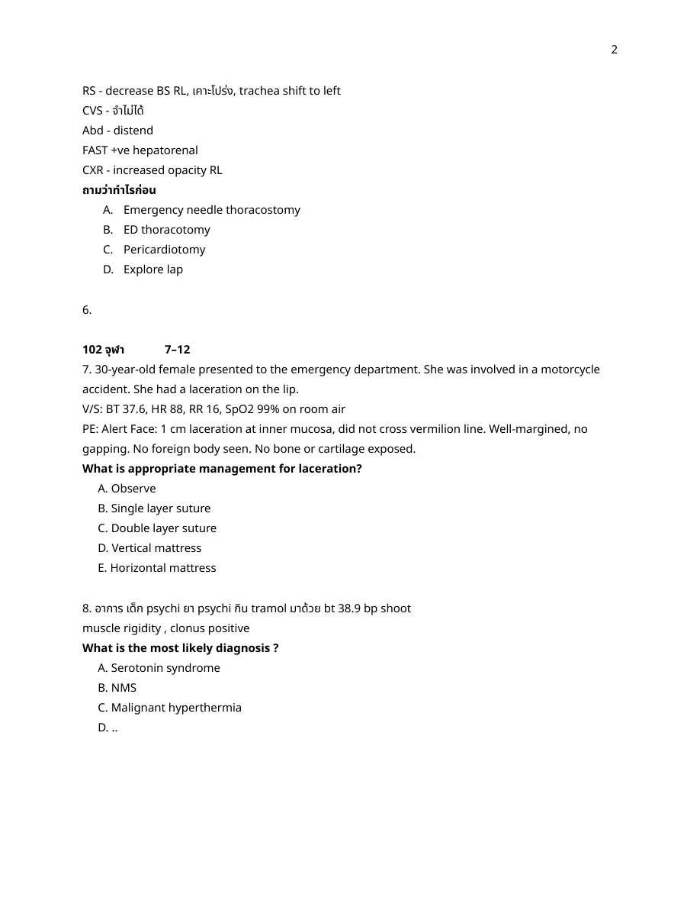
crop
ถูกต้อง
Small inner-lip mucosal laceration that is well approximated, not gaping, and not crossing the vermilion border can be observed.
ESRD with hyperphosphatemia, very high PTH, and painful necrotic well-demarcated ulcer suggests calciphylaxis.
A17-0011A17-Q0011solution_ready
44. Male gunshot wound at left arm Vital sign stable PE: active pulsatile bleed left arm, cap refill 4 sec, cool extremities What is the next step management
crop
ยังไม่ถูก
A. CT angiography
ถูกต้อง
Pulsatile bleeding with ischemic signs is a hard sign of vascular injury requiring operative exploration.
Fever, hypoxemia, bilateral infiltrates within 6 hours of transfusion without volume overload suggests TRALI.
A17-0013A17-Q0013solution_ready
50. 2 years old presented with ecchymosis along extremities after minor trauma no petechiae no known U/D. Lab Plt 280k, PTT 65, PT 14 Appropriate investigation?
crop
ถูกต้อง
Isolated prolonged PTT with normal platelets/PT should first be evaluated with a mixing study.
Isolated prolonged PTT with normal platelets/PT should first be evaluated with a mixing study.
A17-0014A17-Q0014solution_ready
53. 30y Female sexually active มาด้วย ไข้ ปวดตามตัว อ่อนเพลีย Rt ankle and Lt knee pain with pustular rash all extremities ไม่มีตกขาวปวดท้องใดๆ BT38.2 BP 120/80 HR110 O2Sat95% Neuro normal all
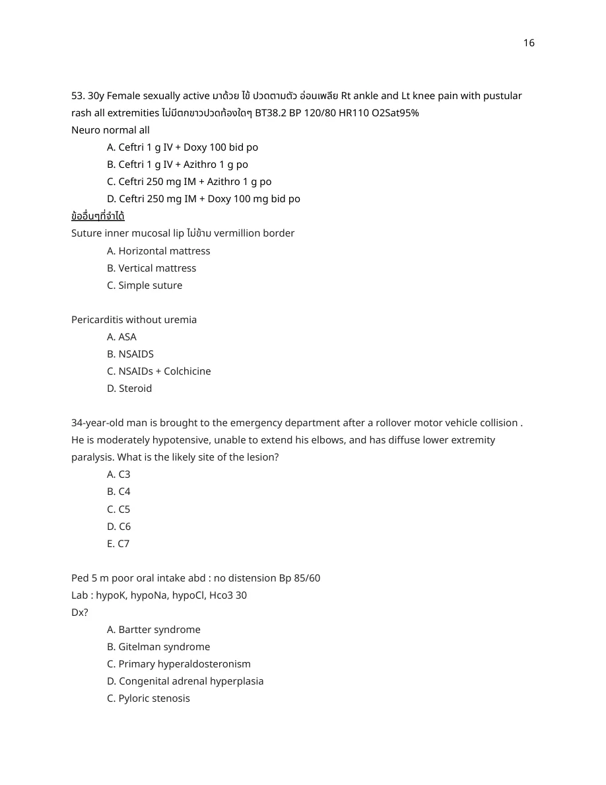
crop
ถูกต้อง
Disseminated gonococcal infection with arthritis and pustular rash needs IV ceftriaxone plus chlamydia coverage.
Disseminated gonococcal infection with arthritis and pustular rash needs IV ceftriaxone plus chlamydia coverage.
A17-0015A17-Q0015solution_ready
61. A 40-year-old women with prior history of clavicular fracture presented to the emergency room with shoulder pain radiates through medial forearm occasionally to the ring finger. Full ROM and no cervical spine tenderness. She complains of numbness, tingling of the fingers and a weak grip without infraspinatus atrophy. What is the diagnosis of this patient?
crop
ยังไม่ถูก
A. Acute thrombosis of the axillary artery
ถูกต้อง
Shoulder pain radiating to the medial forearm/ring finger with paresthesia and weak grip after clavicle injury fits thoracic outlet syndrome.
Hyperthermia, diaphoresis, hyperreflexia, and clonus on serotonergic drugs indicate serotonin syndrome.
A17-0017A17-Q0017solution_ready
76. Male 30 years old, no U/D, presented with sharp, pleuritic chest pain, getting worse when lying supine and getting better when sitting upright. Deny Hx trauma, contact with other patients, recent travel. V/S T37.6, HR 110, BP140/100, RR 22, SpO2 98%. PE - HEENT - not pale conjunctiva, Lung - equal & clear both, Heart - no murmur, Leg - no edema. Troponin 0.1 (normal <0.04) EKG as following
What is appropriate management?
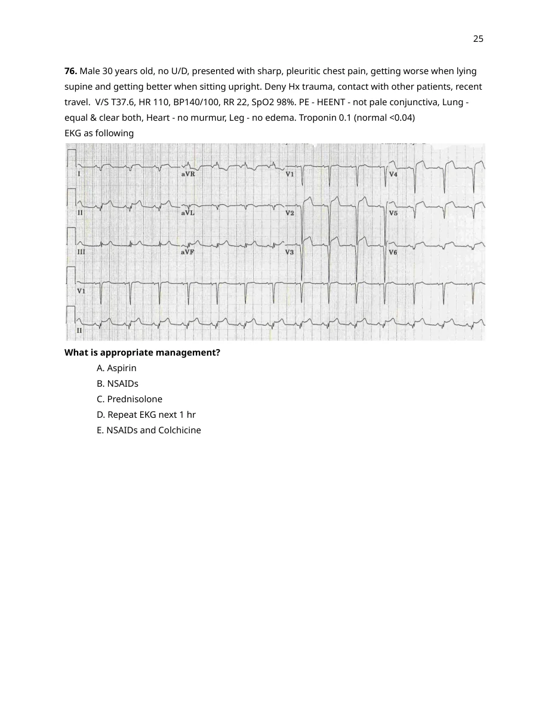
crop
ยังไม่ถูก
A. Aspirin
ยังไม่ถูก
B. NSAIDs
ยังไม่ถูก
C. Prednisolone
ยังไม่ถูก
D. Repeat EKG next 1 hr
ถูกต้อง
Pleuritic positional chest pain with pericarditis-type ECG/troponin pattern is treated with NSAID plus colchicine.
Active arterial extremity bleeding in the field should receive immediate tourniquet control.
A17-0022A17-Q0022solution_ready
144. Accident, left arm wound, active arterial pulsatile bleeding, cap refill 3 sec, ใส่ Tourniquet เหนือแผลแล้ว มาถึง ER ยังคง active bleed What Next step management?
crop
ยังไม่ถูก
A. Direct pressure
ยังไม่ถูก
B. Hemostatic agent
ถูกต้อง
Persistent bleeding despite a tourniquet is managed by tightening/repositioning or adding a second tourniquet proximal to the first.
Persistent bleeding despite a tourniquet is managed by tightening/repositioning or adding a second tourniquet proximal to the first.
A17-0023A17-Q0023solution_ready
154. Blunt neck มี hard sign ถาม initial mx
crop
ถูกต้อง
The reviewed source page shows blunt neck hard sign with only FOL as the listed initial management, matching airway evaluation by flexible fiberoptic laryngoscopy.
The reviewed source page shows blunt neck hard sign with only FOL as the listed initial management, matching airway evaluation by flexible fiberoptic laryngoscopy.
Lidocaine is an amide local anesthetic; true allergy can use an ester anesthetic such as procaine.
A17-0025A17-Q0025solution_ready
161. Male 35 yr, was stabbed by knife at right anterolateral of neck (middle level) V/S stable good consciousness but have pulsatile hematoma around wound. Cant palpable pulse of right carotid artery. normal pulse of left carotid artery. no dyspnea or stridor. What is the next management for this patient?
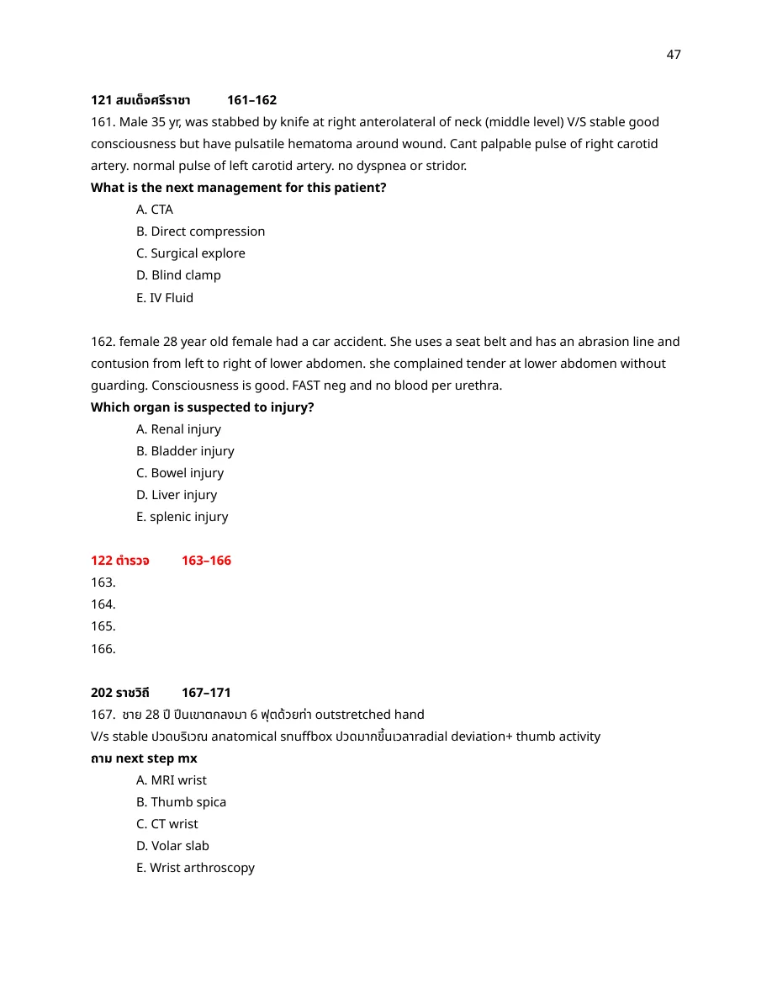
crop
ยังไม่ถูก
A. CTA
ยังไม่ถูก
B. Direct compression
ถูกต้อง
Pulsatile neck hematoma and absent carotid pulse are hard signs of vascular injury.
Pulsatile neck hematoma and absent carotid pulse are hard signs of vascular injury.
A17-0026A17-Q0026solution_ready
162. female 28 year old female had a car accident. She uses a seat belt and has an abrasion line and contusion from left to right of lower abdomen. she complained tender at lower abdomen without guarding. Consciousness is good. FAST neg and no blood per urethra. Which organ is suspected to injury?
crop
ยังไม่ถูก
A. Renal injury
ยังไม่ถูก
B. Bladder injury
ถูกต้อง
Seat-belt sign with lower abdominal tenderness after MVC most strongly suggests bowel/mesenteric injury.
For a stable 3-year-old with 20% TBSA burn, the pediatric burn-fluid estimate needs isotonic resuscitation plus maintenance dextrose fluid; the reviewed choices best match RL about 45 mL/hr plus maintenance 5DNSS about 50 mL/hr.
For a stable 3-year-old with 20% TBSA burn, the pediatric burn-fluid estimate needs isotonic resuscitation plus maintenance dextrose fluid; the reviewed choices best match RL about 45 mL/hr plus maintenance 5DNSS about 50 mL/hr.
A17-0029A17-Q0029solution_ready
169. เด็ก อายุ 4 เดือน 45 min pta แม่บอกว่าตกจากโต๊ะสูง 3 ft ไม่สลบ แต่บอกว่าดูซึมๆ gcs 14 rt temporal hematoma 4 cm bilateral periauricular bruise is seen, มี bruise ตรง anterior chest, v/s stable lung clear ตรวจร่างกายที่อื่นๆปกติ ถามว่า ทำอะไรต่อ next appropriate management
crop
ถูกต้อง
Infant with altered behavior, large temporal hematoma, periauricular bruising, and additional bruises needs CT head and abuse evaluation.
Infant with altered behavior, large temporal hematoma, periauricular bruising, and additional bruises needs CT head and abuse evaluation.
A17-0030A17-Q0030solution_ready
170. A 6-year-old boy is brought in after a high-speed motor vehicle accident. On arrival, his vital signs are: heart rate 170 bpm, respiratory rate 28 breaths per minute, blood pressure 60/40 mmHg, and SpO2 96% on room air. On physical examination, he is lethargic with delayed capillary refill time >5 seconds and tenderness over the right upper quadrant of the abdomen. A FAST exam reveals free fluid in the hepatorenal space. After surgical consultation, a 20 mL/kg bolus of Ringer's Lactate is administered. Post-resuscitation, his vital signs are: heart rate 160 bpm, blood pressure 70/50 mmHg, respiratory rate 26 breaths per minute. What is the next best step in management?
Elbow extension weakness, absent reflex, and middle-finger numbness localize to C7.
A17-0032A17-Q0032solution_ready
173. Boy 5 yr ล้ม ชายโครงขวากระแทกขอบโต๊ะ มีอาการปวดเวลาขยับและสัมผัส ไม่มีแผล ไม่มีอาการอื่น no hematuria v/s stable, PE tender Rt flank on palpation, no abrasion wound, no ecchymosis, ส่งแลป UA RC 20-30, wc 10 ถาม next management
crop
ยังไม่ถูก
A. CT kidney
ยังไม่ถูก
B. Retrograde urethrogram
ยังไม่ถูก
C. Retrograde cystogram
ถูกต้อง
Stable child with isolated microscopic hematuria after minor flank trauma and no high-risk signs usually does not require CT.
Duplicate isolated prolonged PTT bleeding item; mixing study is the next investigation.
A17-0034A17-Q0034solution_ready
62. A 40-year-old female marathon runner experiences pain below the medial malleolus radiating to the sole of the foot and the first three toes. Full ROM of all toe. Which nerve is being compress?
172. boy5yr mc accident กระเด็นจากรถ ems load iv 20ml/kg (ไม่ได้บอกว่า scene BPdropมั้ย) มี large LW at temporal no active bleeding, ซึม stupor weak Rt side จากนั้นมารอา score drop, v/s stable bpไม่drop แต่ใส่ ett เพราะscore dropแล้ว ถาม next appropriate mx
crop
ยังไม่ถูก
A. FAST us
ถูกต้อง
Pediatric head trauma with decreasing consciousness and focal weakness needs urgent CT brain.
Penetrating neck/laryngeal injury with inspiratory stridor is an airway emergency; the source choices include surgical tracheostomy as the safest definitive airway option.
Penetrating neck/laryngeal injury with inspiratory stridor is an airway emergency; the source choices include surgical tracheostomy as the safest definitive airway option.
A17-0038A17-Q0038solution_ready
เด็ก 7 ปี อุบัติเหตุ รถยนต์ชนต้นไม้ ความเร็ว 60 km/hr; primary survey - pass, PE: seen seat-belt contusion and tender along spine; Q - fracture of L spine?
crop
ยังไม่ถูก
A. burst fracture
ถูกต้อง
Seat-belt injury with lumbar spine tenderness is associated with flexion-distraction Chance fracture.
เด็ก10ปี ล้ม outstretched hand ปวดข้อมือ film forearm: fracture distal radius
crop
ถูกต้อง
The reviewed source stem describes a pediatric distal radius buckle fracture; option A appears to be the intended buckle-fracture choice despite the spelling as 'bucket'.
The reviewed source stem describes a pediatric distal radius buckle fracture; option A appears to be the intended buckle-fracture choice despite the spelling as 'bucket'.
Vesicular painful finger lesion in a dentist after bite exposure suggests herpetic whitlow.
A17-0056A17-Q0056solution_ready
ชาย 24ปี ล้ม เจ็บข้อมือซ้าย บริเวณ anatomical snuff box เจ็บมากขึ้นเวลาขยับนิ้วโป้ง all direction ให้ film ถาม mx (เห็นแค่รอยร้าวเล็กๆ lateral side proximal 1 Metacarpal non displace left hand, ไม่แน่ใจว่าเป็น non displace bennett fx มั้ย)
crop
ยังไม่ถูก
A. Pain killer
ยังไม่ถูก
B. Short arm cast
ยังไม่ถูก
C. Short arm splint
ถูกต้อง
Snuffbox tenderness with suspected nondisplaced scaphoid injury is immobilized in a short-arm thumb-spica splint; the reviewed source choices show this option.
Snuffbox tenderness with suspected nondisplaced scaphoid injury is immobilized in a short-arm thumb-spica splint; the reviewed source choices show this option.
A17-0057A17-Q0057solution_ready
เด็กชายอายุ4ปีมาEDด้วยเรื่องปวดท้อง คาดเบล้นั่งอยู่ข้างหลัง v/s stable Fast seen free fluid at suprapucic UA RBC >50
crop
ยังไม่ถูก
A. suprapubic pyelogram
ยังไม่ถูก
B. Cystogram
ยังไม่ถูก
C. retrograde ureterogram
ถูกต้อง
Seat-belt abdominal trauma with free fluid and significant hematuria needs CT abdomen/pelvis evaluation.
FLACC pain scale for a 2-year-old child; exact original option letter is unavailable because the source choices are blank.
Rationale
The source row is not the separate FPS-R third-face scoring item; it only says "Ped 2y, Pain scale" with blank choices. Interpreted as scale selection for a 2-year-old, the best content answer is the FLACC observational pain scale, which is appropriate for young/preverbal children. The exact source option letter cannot be recovered from the visible page.
Forefoot pain between toes 3 and 4 worsened by high heels with palpable tender mass fits Morton's neuroma.
A17-0062A17-Q0062solution_ready
ขับ mc รถล้มมา แรกรับมี HR 120 BP drop film มี lateral pelvic fx, pubic symphysis stable หลังได้ management BP ขึ้น HR ลง ถาม next appropriate management
crop
ยังไม่ถูก
A. pelvic binder
ถูกต้อง
After initial stabilization and response in pelvic fracture, CT pelvis/abdomen helps define injury and next management.
Expanding hematoma without immediate hard ischemic signs in a stable limb is evaluated with CTA.
A17-0065A17-Q0065solution_ready
2. 27 years old male was brought to ER after being stabbed in the neck with knife. Physical examination revealed stabbed wound at region between angle of mandible and base of occipital bone with intact platysma. Which of the following is the next best step in management?
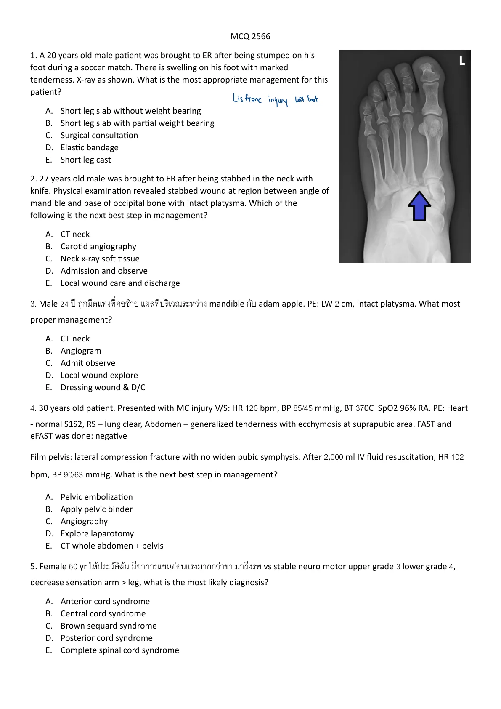
crop
ยังไม่ถูก
A. CT neck
ยังไม่ถูก
B. Carotid angiography
ยังไม่ถูก
C. Neck x-ray soft tissue
ยังไม่ถูก
D. Admission and observe
ถูกต้อง
A neck stab wound with intact platysma is not a penetrating neck injury and can receive local wound care if otherwise well.
Duplicate intact-platysma neck wound item; local care is appropriate.
A17-0067A17-Q0067solution_ready
4. 30 years old patient. Presented with MC injury V/S: HR 120 bpm, BP 85/45 mmHg, BT 37OC SpO2 96% RA. PE: Heart - normal S1S2, RS - lung clear, Abdomen - generalized tenderness with ecchymosis at suprapubic area. FAST and eFAST was done: negative Film pelvis: lateral compression fracture with no widen pubic symphysis. After 2,000 ml IV fluid resuscitation, HR 102 bpm, BP 90/63 mmHg. What is the next best step in management?
crop
ยังไม่ถูก
A. Pelvic embolization
ยังไม่ถูก
B. Apply pelvic binder
ยังไม่ถูก
C. Angiography
ยังไม่ถูก
D. Explore laparotomy
ถูกต้อง
Transient responder with negative FAST/eFAST after blunt trauma should undergo CT to identify bleeding/injury.
Transient responder with negative FAST/eFAST after blunt trauma should undergo CT to identify bleeding/injury.
A17-0068A17-Q0068solution_ready
6. Female 30 yr ให้ประวัติ motor vehicle accident มีอาการเจ็บหน้าอกซ้าย มาถึงรพ VS BT: 370C, BP 110/70 mmHg, HR 110 bpm, RR 28 bpm, SpO2 RA 90%. PE: lung decreased breath sound left lung, no crepitation ให้รูป barcode sign (u/s) >> what is management?
crop
ยังไม่ถูก
A. Intubation
ยังไม่ถูก
B. Needle cricothyroidotomy
ยังไม่ถูก
C. Needle thoracocentesis
ถูกต้อง
Traumatic pneumothorax on ultrasound in a symptomatic patient is managed with tube thoracostomy.
Traumatic pneumothorax on ultrasound in a symptomatic patient is managed with tube thoracostomy.
A17-0069A17-Q0069solution_ready
42) ผู้หญิง 56 ปี U/D HT on Enalapril มีประวัติ 2 d PTA ปวดข้อเท้าขวาหลังจาก trauma หลังจากนั้นกินยา ibuprofen(400) q 4-6 hr วันนี้มารพ พบ AKI Cr 1.7. What is mechanism of AKI in this patient?
crop
ยังไม่ถูก
A. Thrombosis Renal artery
ยังไม่ถูก
B. Interstitial nephritis
ยังไม่ถูก
C. Acute tubular necrosis
ถูกต้อง
NSAID afferent vasoconstriction plus ACE inhibitor effect reduces glomerular filtration.
Construction material causing deep alkali burn is most consistent with lime/cement exposure.
A17-0073A17-Q0073solution_ready
101. เคส male โดนรถชน weakness ทั้งแขนและขาทั้งสองข้าง PE v/s ปกติgood consciousness, both arm cannot flex elbow and cannot extend wrist, impaired sensation at Lateral side of both arm and forearm ถาม level of injury
crop
ยังไม่ถูก
A. C2-C3
ยังไม่ถูก
B. C3-C4
ถูกต้อง
Loss of elbow flexion/wrist extension with lateral arm/forearm sensory deficit localizes around the C5-C6 segment; C4-C5 is the best listed cord level.
Loss of elbow flexion/wrist extension with lateral arm/forearm sensory deficit localizes around the C5-C6 segment; C4-C5 is the best listed cord level.
A17-0074A17-Q0074solution_ready
105. ชาย 50 ปี ประสบอุบัติเหตุรถจักรยานยนต์ moderate velocity motorcycle accident บ่นปวดหลังกับปวดท้อง ตรวจร่างกายมี lower back and left paraspinal tenderness. CXR pelvis normal FAST normal. No significant hematuria UA microscopic hematuria RBC 10-20. What is the most appropriate management (choice เรียงไม่ตรง)
crop
ยังไม่ถูก
A. IVP
ยังไม่ถูก
B. CT pelvis + abdomen
ถูกต้อง
Stable blunt flank/back trauma with low-grade microscopic hematuria and no significant associated injury can be observed without CT.
The reviewed source page shows the full answer choices. A stable 36-week pregnant trauma patient with tachypnea but preserved ventilation should receive high-flow oxygen by mask rather than immediate intubation.
The reviewed source page shows the full answer choices. A stable 36-week pregnant trauma patient with tachypnea but preserved ventilation should receive high-flow oxygen by mask rather than immediate intubation.
Duplicate of the MCQ PED trauma 66 distal-femur Salter-Harris item; the reveal slide shows a distal femoral physeal injury without a metaphyseal or epiphyseal fragment, matching type I.
A17-0083A17-Q0083solution_ready
125. เด็กตก merry-go around 1 m. ไม่มีอาการอะไร neuro ดี มี bruise 2x2 ที่ occiput
crop
ยังไม่ถูก
A. CT
ยังไม่ถูก
B. MRI
ยังไม่ถูก
C. film skull
ถูกต้อง
Asymptomatic child with normal neuro exam and small scalp bruise after low-height fall can be reassured with precautions.
169. Burn at dorm, you are in treatment red zone มีผู้ป่วยมา3 คน แต่มีรถambulance 1 คัน ระยะนำส่งรพ 10 km เรียงลำดับการนำส่งผู้ป่วย 1 SBP 40 GCS 3 RR6 100% burn 2nd+3rd degree burn 2 SBP 110 GCS 14 RR 20 superficial burn at arm 3 SBP 70 GCS 7 RR 8 burn at neck and face Choice
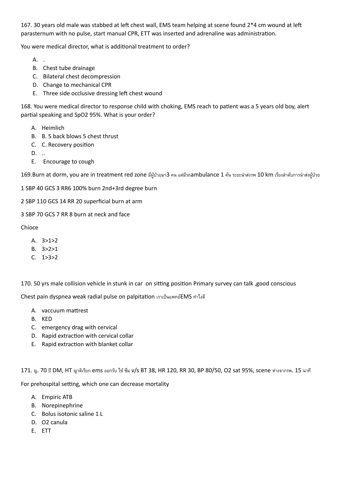
crop
ยังไม่ถูก
A. 3>1>2
ถูกต้อง
The patient with airway/face-neck burn and salvageable shock goes first; the 100% burn patient is expectant, minor burn last before expectant.
D. Call security to restrain/protect and provide emergency care
Rationale
Intoxicated, violent, bleeding trauma patient likely lacks safe decision capacity and needs safety control plus emergency treatment.
A17-0089A17-Q0089solution_ready
1. A 20 years old male patient was brought to ER after being stumped on his foot during a soccer match. There is swelling on his foot with marked tenderness. X-ray as shown. What is the most appropriate management for this patient?
crop
ยังไม่ถูก
A. Short leg slab without weight bearing
ยังไม่ถูก
B. Short leg slab with partial weight bearing
ถูกต้อง
The reviewed foot x-ray is labeled Lisfranc injury in the source annotation, which requires surgical/orthopedic consultation rather than simple immobilization alone.
The reviewed foot x-ray is labeled Lisfranc injury in the source annotation, which requires surgical/orthopedic consultation rather than simple immobilization alone.
The reviewed source page for the blunt neck hard-sign item explicitly gives FOL as the answer, matching airway evaluation for suspected laryngotracheal injury.
A17-0101A17-Q0101solution_ready
ชาย 30 ปี ems นำส่ง ถูกแทงที่คอใต้ mandible มี active bleeding paramedic กดแผลมาแล้ว แต่ยัง bleed มี tachycardia, hypotension A) combat gauze B) pressure dressing with bandage C) แหย่นิ้วเข้าไปที่แผลแล้วกด D) ใส่ foley No.18 แล้ว blow balloon E)
Persistent penetrating neck hemorrhage despite pressure can be temporized with Foley balloon tamponade.
A17-0102A17-Q0102solution_ready
Blunt neck injury มี subcutaneous emphysema, difficulty breathing, v/s stable the most appropriate airway management A) Emergency tracheostomy B) Sx cricothyroidotomy C) direct laryngoscope intubation D) flexible endoscopic intubation E) Video laryngoscope intubation
Open anterior neck wound with air bubbling implies tracheal injury; securing the distal airway through the wound can be appropriate.
A17-0106A17-Q0106solution_ready
ชาย 30 ปี Blunt Anterior neck injury มี swelling neck, increased stridor ถาม Next step proper investigation A) CXR B) Direct laryngoscope C) Esophagogram D) CT neck with contrast E)
The reviewed reference slide states that suspected laryngotracheal airway injury should be evaluated with flexible fiberoptic laryngoscopy to define airway patency; among the listed choices, direct laryngoscope is the matching airway-visualization investigation.
A17-0107A17-Q0107solution_ready
หญิง 29 ปี MC accident PE: full conscious, ptosis left eye with pinpoint pupil. What is the investigation of choice? A) CT brain NC B) CT brain with contrast C) MRI brain D) Urine substance E) CTA neck
Post-traumatic Horner syndrome suggests carotid artery dissection; CTA neck is the investigation of choice.
A17-0108A17-Q0108solution_ready
1. ชาย 30 ปี อุบัติเหตุรถจักรยานยนต์คว่ำ มีอาการเจ็บที่บริเวณคอด้านขวา PE: V/S stable, right eye ptosis, pupil 1.5 mm slightly react to light, FAST negative, CXR: right fracture rib ถาม gold standard ในการ diagnosis
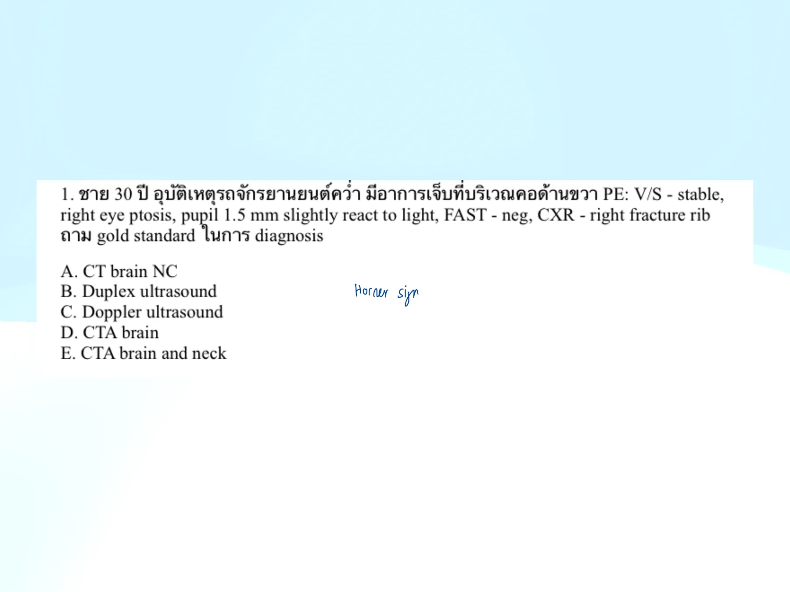
crop
ยังไม่ถูก
A. CT brain NC
ยังไม่ถูก
B. Duplex ultrasound
ยังไม่ถูก
C. Doppler ultrasound
ยังไม่ถูก
D. CTA brain
ถูกต้อง
Traumatic Horner syndrome from suspected carotid/vertebral injury is evaluated with CTA head/neck among listed tests.
Older trauma patient with posterior neck pain needs cervical spine CT rather than discharge after analgesia.
A17-0113A17-Q0113solution_ready
Ecchymosis chest wall with generalized cutaneous emphysema, trachea in midline. BP 70/40, RR 26, BT 37.2, SpO2 96 on mask with bag 10 LPM. Heart and lung can not audible due to subcutaneous emphysema. Next step
crop
ยังไม่ถูก
A. intubation
ยังไม่ถูก
B. portable x ray
ยังไม่ถูก
C. Pericardiocentesis
ยังไม่ถูก
D. Warm NSS 1000 ml IV load
ถูกต้อง
Shock with severe subcutaneous emphysema and inaudible chest exam is treated as possible tension pneumothorax.
141. A 8 years old boy presented with rt hip pain 2 days. He was previously well but have a common cold 1 wk ago. PE vs stable T37.2 rt. hip pain tender and pain on motion but can do flex/abduct with full rom lab wbc 9000 n20 L70 crp <0.2 esr 16 Film hip : WNL what is the most likely diagnosis [MCQ 65]
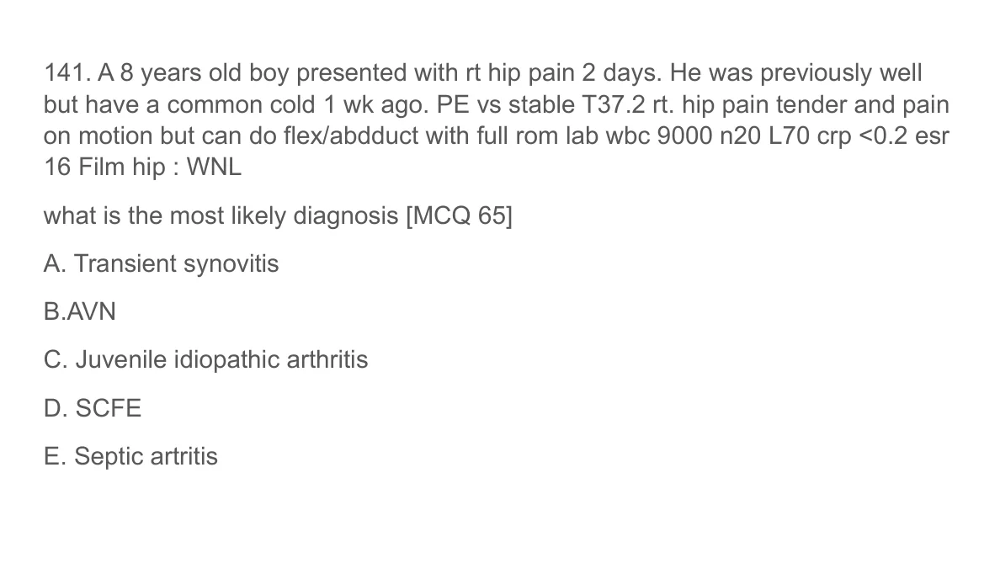
p36
ถูกต้อง
Child with hip pain after URI, afebrile, normal inflammatory markers, and full ROM best fits transient synovitis.
Child with hip pain after URI, afebrile, normal inflammatory markers, and full ROM best fits transient synovitis.
A17-0117A17-Q0117solution_ready
141. A 14 year old male, presented with left knee pain for a week with a swollen knee. He can flex and extend full range of motion. He denied history of trauma. He is a keen athlete. film lateral knee : reveal irregularity and prominent fragmentation of the tibial tubercle. Which of the following is the most appropriate management? [MCQ 64] A) Splint B) Long leg slab C) Rest and reassure D) E) Complete sport activity restriction
The reviewed pediatric ortho source marks ricket/rickets as the answer for the bowing-leg x-ray.
A17-0119A17-Q0119solution_ready
75. เด็กเคยเป็นหวัด วันนี้ปวดสะโพก 2 ข้าง ไม่มีไข้ ตรวจร่างกายแล้ว full ROM ทั้ง active, passive ถาม MX [MCQ 62] A NSAID B Arthrocentesis C Antibiotics D Surgery E Steroid
Transient synovitis after URI is treated with NSAIDs and observation.
A17-0120A17-Q0120solution_ready
112. Obese child presented with groin pain and refused to walk PE decreased range of motion Film ถาม diagnosis [MCQ 62] [x-ray image shown] A SCFE B Transient synovitis C AVN of hip D Septic arthritis
Obese child with groin pain, refusal to walk, and hip x-ray findings is slipped capital femoral epiphysis.
A17-0121A17-Q0121solution_ready
ผู้ป่วยอายุ 35 ปี หนัก 50 kg burn superficial partial thickness at front of Lt arm, front and back of Rt arm, deep partial thickness at anterior trunk, front and back of Rt leg, front of Lt leg คำนวณ fluid ที่ต้องใช้ใน 24 ชั่วโมง โดยคำนวณตาม ATLS 10th\nA. 4500 ml\nB. 5400 ml\nC. 5850 ml\nD. 9000 ml\nE. 12800 ml
Source: Test for Thermal and Chemical Injuries.pdf | Page/slot: - Marker: Q1 | Marker: Q1
Reference: Source: Test for Thermal and Chemical Injuries.pdf | Page/slot: - Marker: Q1 | Marker: Q1
ซ่อนเฉลยเปิดเฉลยSolution readyA17-0121 answer
Answer
C. 5850 mL
Rationale
ATLS 10th adult burn formula uses 2 mL x kg x %TBSA; 2 x 50 x 58.5% = 5850 mL.
Source: Test for Thermal and Chemical Injuries.pdf | Page/slot: - Marker: Q2 | Marker: Q2
Reference: Source: Test for Thermal and Chemical Injuries.pdf | Page/slot: - Marker: Q2 | Marker: Q2
ซ่อนเฉลยเปิดเฉลยSolution readyA17-0122 answer
Answer
B. 4480 mL
Rationale
The source reveal slide calculates TBSA 64% and total 24-hour fluid as 8960 mL by ATLS 10th 2 mL x 70 kg x 64%; half is given in the first 8 hours, so 4480 mL.
54. 34-year-old man is brought to the emergency department after a rollover motor vehicle collision . He is moderately hypotensive, unable to extend his elbows, and has diffuse lower extremity paralysis. What is the likely site of the lesion? - C3 - C4 - C5 - C6 - C7
In traumatic arrest with decreased breath sounds, immediate bilateral chest decompression is a high-priority reversible intervention.
A17-0138A17-Q0138solution_ready
130. 27 YOM motorcycle accident มี penetrating wound 4th ICS, MCL ข้างขวา EMS ทํา three side occlusive dressing มาแล้ว มาถึง ER เป็น Tension pneumothorax ข้างขวา what is the appropriate next step? IV fluid Needle thoracocentesis ICD ETT เปิดแผล remove clot
The reviewed duplicate pediatric burn-fluid source gives the full choices; using typical 3-year-old weight assumptions and elapsed time, the closest listed regimen is RL 45 mL/hr plus maintenance 5DNSS 50 mL/hr.
The reviewed duplicate pediatric burn-fluid source gives the full choices; using typical 3-year-old weight assumptions and elapsed time, the closest listed regimen is RL 45 mL/hr plus maintenance 5DNSS 50 mL/hr.
A17-0149A17-Q0149solution_ready
172 boy5yr mc accident กระเด็นจากรถ ems load iv 20ml/kg (ไม่ได้บอกว่าscene BPdropมั้ย) มี large LW at temporal no active bleeding, ซึม stupor weak Rt side จากนั้นมาอีอา score drop ,v/s stable bpไม่ดรอป แต่ใส่ ett เพราะscore dropแล้ว ถามnext appropriate mx -FAST us -CT brain -manitol -hypertonic saline
Duplicate pediatric head trauma with declining GCS/focal weakness item.
A17-0150A17-Q0150solution_ready
173. Boy5 yr ล้ม ชายโครงขวากระแทกขอบโต๊ะ มีอาการปวดเวลาขยับและสัมผัส ไม่มีแผล ไม่มีอาการอื่น no hematuria v/s stable, PE tender Rt flank on palpation , no abrasion wound, no ecchymosis , ส่งแลป UA RC 20-30 , wc 10 ถาม next management -CT kidney -retrograde uretogram -retrograde cystogram -reassure and d/c
Duplicate stable minor flank trauma with low-grade microscopic hematuria item.
A17-0151A17-Q0151solution_ready
ผช 43 ปี presented with abdominal pain from high speed motor vehicle collision with restrained seatbelts. V/S stable, PE abdomen tender at supra-pubic area, no guarding, no rebound, perineal ecchymosis with bleeding per meatus, FAST negative. What is the most appropriate next step for investigation\nA. Cystoscope\nB. Pyelogram\nC. retrograde urethrogram\nD. ultrasound KUB\nE. plain film x-ray KUB
Stable pediatric blunt abdominal trauma with abdominal tenderness, pelvic free fluid, and significant hematuria should be evaluated with CT abdomen/pelvis.
A17-0153A17-Q0153solution_ready
A 47-year-old Thai female with a history of adrenal insufficiency, who is currently taking prednisolone at a dose of 10 mg per day, presents to the emergency room with pain in her left ankle following a fall. Upon physical examination, her vital signs are stable, but she exhibits swelling in the left ankle, full range of motion, and pain on movement. X-rays reveal no evidence of a fracture. In addition to pain management, what would be the appropriate adjustment for her prednisolone dose?
crop
ยังไม่ถูก
A. Double dose of prednisolone for 1 week
ยังไม่ถูก
B. Triple dose of prednisolone for 1 week
ถูกต้อง
Minor injury without fracture or instability is a mild physiologic stress; short temporary doubling is appropriate.
ยังไม่ถูก
D. Triple dose of prednisolone for 24 to 48 hours
ยังไม่ถูก
E. Regular dose of prednisolone, no need for dose adjustment
Prehospital burn care for an electrical burn should cover the burn with a clean sterile dry dressing and avoid wet dressings, cold packs, or scrubbing. Cooling/scrubbing can worsen tissue injury or hypothermia and does not address the deep electrical injury risk.
References
- StatPearls point-of-care electrical injuries: management includes wound care and evaluation for deep tissue injury/arrhythmia rather than wet/cold dressing or scrubbing. https://www.statpearls.com/point-of-care/20967
A17-0156A17-Q0156solution_ready
99. 21-year-old football player received cryotherapy with inappropriate footwear. He developed numbness on his feet. Vital signs is stable. Examination skin pale and mottling. What is the most appropriate management?
crop
ยังไม่ถูก
A. Use warm and wet towel
ยังไม่ถูก
B. Rewarm with 40c intravenous crystalloid
ถูกต้อง
The pale mottled numb feet after cold exposure/cryotherapy suggest frostbite/cold injury. Best management is rapid rewarming in circulating warm water around 37-39 C or up to 40-42 C until thawed, and the injured limb should not be ambulated if refreezing/trauma risk exists. Among the options, warm-water immersion without ambulation is best.
The pale mottled numb feet after cold exposure/cryotherapy suggest frostbite/cold injury. Best management is rapid rewarming in circulating warm water around 37-39 C or up to 40-42 C until thawed, and the injured limb should not be ambulated if refreezing/trauma risk exists. Among the options, warm-water immersion without ambulation is best.
References
- Wilderness Medical Society frostbite guideline: rapid field rewarming uses warm water bath around 37-39 C when refreezing risk is absent. https://journals.sagepub.com/doi/10.1016/j.wem.2019.05.002
Burn size is 25% TBSA. Using Parkland-style initial resuscitation, 4 mL x body weight x %TBSA is given over 24 h, with half in the first 8 h. For a 6-year-old estimated around 20-22 kg, the first-8-hour rate is about 125-138 mL/hr, so the closest option is 133 mL/hr.
Burn size is 25% TBSA. Using Parkland-style initial resuscitation, 4 mL x body weight x %TBSA is given over 24 h, with half in the first 8 h. For a 6-year-old estimated around 20-22 kg, the first-8-hour rate is about 125-138 mL/hr, so the closest option is 133 mL/hr.
References
- StatPearls, Burn Fluid Resuscitation: Parkland formula gives 4 mL/kg/%TBSA in the first 24 h, half in the first 8 h. https://www.ncbi.nlm.nih.gov/books/NBK534227/
The reviewed dental image shows an uncomplicated crown fracture involving enamel and dentin without visible pulp exposure, consistent with Ellis class II.
The reviewed dental image shows an uncomplicated crown fracture involving enamel and dentin without visible pulp exposure, consistent with Ellis class II.
A17-0159A17-Q0159solution_ready
11. A 32-year-old male presented with complaint of painless swelling on the right ear growing for the last 2 days. He had no significant previous medical history or trauma to the ear. The patient stated that he had recently been using his mobile phone up to 4 hours per day, listening with his right ear. On examination, a slightly compressible swelling affecting the concha, limited to an area of approximately 10 x 5 mm was present. What is your management?
crop
ยังไม่ถูก
A. Observation 1 week
ยังไม่ถูก
B. Oral antibiotic covered anaerobic organism
ถูกต้อง
Small painless compressible conchal swelling is consistent with auricular pseudocyst/seroma; aspiration is appropriate first management.
ยังไม่ถูก
D. Incision and drainage with compression dressing
Penetrating globe injury should not have the object removed in the ED; give systemic antibiotics, protect the eye, and consult ophthalmology.
A17-0161A17-Q0161solution_ready
32. ผู้ป่วยหญิงอายุ 50 ปี underlying DM, hypertension, dyslipidemia มาด้วยอาการตาพร่ามัวลงทันทีๆ 1 วัน ไม่มีไข้ ไม่ปวด ไม่แสบหรือเคืองตา ไม่มี trauma ตรวจร่างกาย VA right 20/200, left 20/40 Right eye examination reveal no abnormal external lesion, presence of relative afferent pupillary reflex, the fundus show diffuse retinal hemorrhage, macular edema and optic disc edema. Left eye examination was normal
จงให้การวินิจฉัยโรคของผู้ป่วยรายนี้
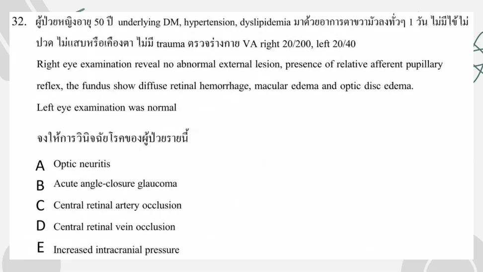
crop
ยังไม่ถูก
A. Optic neuritis
ยังไม่ถูก
B. Acute angle-closure glaucoma
ยังไม่ถูก
C. Central retinal artery occlusion
ถูกต้อง
Painless visual loss with diffuse retinal hemorrhages, macular edema, and optic disc edema is CRVO.
Painless visual loss with diffuse retinal hemorrhages, macular edema, and optic disc edema is CRVO.
A17-0162A17-Q0162solution_ready
107. A 25-year-old man who has suffered blunt trauma to his head has a suspected injury to his superior rectus muscle. What eye movements might be compromised if this indeed were the case?
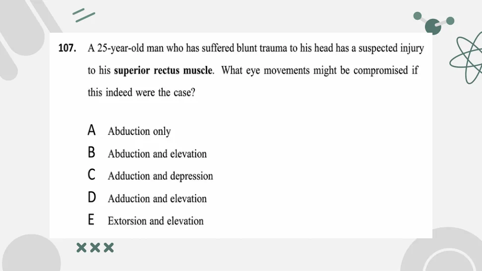
crop
ยังไม่ถูก
A. Abduction only
ยังไม่ถูก
B. Abduction and elevation
ยังไม่ถูก
C. Adduction and depression
ถูกต้อง
Superior rectus primarily elevates the eye and also contributes to adduction/intorsion.
Trauma with proptosis, high IOP, decreased vision, and limited EOM is orbital compartment syndrome.
A17-0164A17-Q0164solution_ready
9. Female 34 yr. was hit by tennis ball presented with left eye pain. PE: right eye normal, left eye proptosis, decrease VA, limit EOM, IOP 45 mmHg. Which of the following appropriate management?
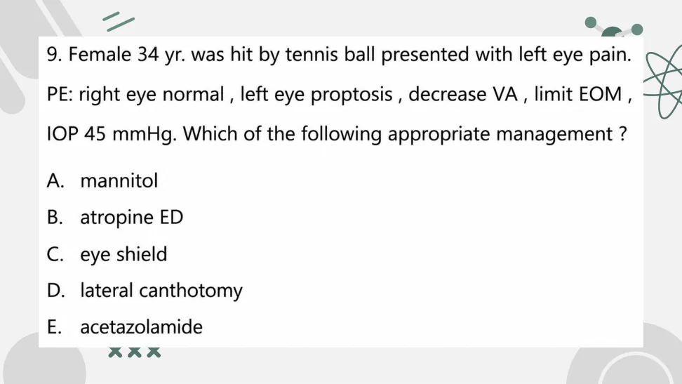
crop
ยังไม่ถูก
A. mannitol
ยังไม่ถูก
B. atropine ED
ยังไม่ถูก
C. eye shield
ถูกต้อง
Orbital compartment syndrome after blunt trauma requires emergent lateral canthotomy/cantholysis.
Stupor, mutism, echolalia, stereotypy, posturing, negativism, and waxy flexibility are catatonia.
A17-0167A17-Q0167solution_ready
เด็กชาย 9 ปี โดนชกที่คอ v/s HR 90, RR20, BP 89/60 เสียงแหบ คอไม่บวม ไม่มีแผล ถามว่า The most appropiated management
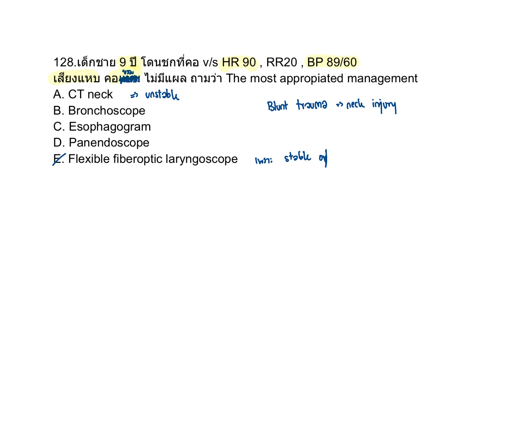
crop
ยังไม่ถูก
A. CT neck
ยังไม่ถูก
B. Bronchoscope
ยังไม่ถูก
C. Esophagogram
ยังไม่ถูก
D. Panendoscope
ถูกต้อง
Stable blunt laryngeal trauma with hoarseness is evaluated with flexible fiberoptic laryngoscopy.
Source: Test stridor.pdf | Page/slot: 3 | Marker: Q3
Reference: Source: Test stridor.pdf | Page/slot: 3 | Marker: Q3
ซ่อนเฉลยเปิดเฉลยSolution readyA17-0167 answer
Answer
E. Flexible fiberoptic laryngoscope
Rationale
Stable blunt laryngeal trauma with hoarseness is evaluated with flexible fiberoptic laryngoscopy.
A17-0168A17-Q0168solution_ready
Male 32 yr after SI, tenderness penis, and flaccid c ecchymosis What time within for Sx that to minimize dysfunction
crop
ยังไม่ถูก
A. 2hr
ยังไม่ถูก
B. 4hr
ยังไม่ถูก
C. 8hr
ยังไม่ถูก
D. 12hr
ถูกต้อง
Penile fracture is a surgical emergency; early repair gives better functional outcomes than delayed conservative treatment. Among the choices, the accepted window to minimize erectile/voiding complications is within 24 hours.
Penile fracture is a surgical emergency; early repair gives better functional outcomes than delayed conservative treatment. Among the choices, the accepted window to minimize erectile/voiding complications is within 24 hours.
References
- Source crop: `source_pdf_inventory/question_crops/mcq-202024-pdf/mcq-202024-pdf_page_0018_full.png`. - Source page duplicate wording also lists the same concept with Thai choices on the same crop.
A17-0169A17-Q0169solution_ready
7. Female 70 year old come to ED with falling from stairs. She had multiple facial swelling and ecchymosis. On physical examination, you can palpable deformity from maxilla up to floor of orbit and nasal but not involve zygomatic bone. What is the diagnosis?
crop
ยังไม่ถูก
A. Tripod fracture
ยังไม่ถูก
B. Blowout fracture
ยังไม่ถูก
C. Le fort I fracture
ถูกต้อง
Le Fort II is the pyramidal midface fracture pattern involving the maxilla, nasal bridge, and orbital floor/rim region while sparing the zygomatic arches. Le Fort I is lower maxilla only; Le Fort III is craniofacial dissociation with zygomatic involvement.
Le Fort II is the pyramidal midface fracture pattern involving the maxilla, nasal bridge, and orbital floor/rim region while sparing the zygomatic arches. Le Fort I is lower maxilla only; Le Fort III is craniofacial dissociation with zygomatic involvement.
136. พาราเมดิกออกรับชายกลางคน MCA ปวดต้นขาซ้าย+deformity, access at scene: BP drop, tachycardia ตรวจร่างกายเบื้องต้น conscious, no-active bleed LW 3 cm Rt.leg, deformity+swelling Lt.thigh with shortening Lt.leg+external rotation+ecchymosis (จะสื่อว่า pelvic fx) ถาม initial mx.
crop
ถูกต้อง
The prehospital trauma picture suggests unstable pelvic fracture with shock. Initial management is early pelvic binder application to reduce pelvic volume and bleeding while resuscitation/transport proceeds.
The prehospital trauma picture suggests unstable pelvic fracture with shock. Initial management is early pelvic binder application to reduce pelvic volume and bleeding while resuscitation/transport proceeds.
100. A 40-year-old woman with end stage renal disease was diagnosed as deep vein thrombosis, intravenous unfractionated heparin was given. After start treatment for 6 days, her clinical was not improved. Complete blood count showed decreased platelet count from 180,000/mm3 to 90,000/mm3. Which one is the pathophysiology of this condition?
ยังไม่ถูก
A. Direct activation of platelet
ยังไม่ถูก
B. Acquire deficiency of ADAMTS13
ถูกต้อง
This is the same HIT stem as A07-0001. Platelet fall after several days of unfractionated heparin is caused by antibodies against platelet factor 4/heparin complexes.
ยังไม่ถูก
D. Antibody against glycoprotein IIb/IIIa
ยังไม่ถูก
E. Peripheral destruction in reticuloendothelial system
This is the same HIT stem as A07-0001. Platelet fall after several days of unfractionated heparin is caused by antibodies against platelet factor 4/heparin complexes.
References
- Source: `source_pdf_inventory/sources/quiz-clotting-disorder.md`. - ASH HIT guideline: HIT is an immune reaction involving antibodies to PF4/heparin complexes. https://ashpublications.org/bloodadvances/article/2/22/3360/16294/American-Society-of-Hematology-2018-guidelines-for
A17-0172A17-Q0172solution_ready
50. 2 years old presented with ecchymosis along extremities after minor trauma no petechiae no known U/D Lab Plt 280k, PTT 65, PT 14 Appropiate investigation? 1. Mixed test 2. Factor VIII 3. Factor IX 4. vWF
Bruising after minor trauma with normal platelet count/PT and isolated prolonged PTT suggests an intrinsic pathway factor deficiency or inhibitor. The appropriate first investigation is a mixing study to distinguish deficiency from inhibitor before specific factor assays.
196. ผู้ป่วยเด็กอายุประมาณ toddler มาด้วย minor trauma จากนั้นมีจํ้าเลือดขึ้นที่ข้อหลายๆข้อ V/S stable PE: multiple ecchymosis without petechiae PTT 59 PT 12 Platelet 359,000 ถาม most appropriate next step management 1. mixing study 2. factor VIII level 3. factor IX level 4. Bone marrow biopsy 5. vWF level
Joint bleeding/ecchymoses with normal platelet count and PT but prolonged PTT points to hemophilia or another intrinsic pathway problem. The best next step among the choices is a mixing study, then factor VIII/IX levels depending on correction pattern.
A 4-year-old girl who had cerebral palsy from head injury last year was brought to emergency department due to seizure for 10 minutes. She had diarrhea and vomiting for 3 days. Seizure was stopped after she got intravenous diazepam 1 dose. Physical examination revealed BT 37 C, RR 42/min, HR 96/min, BP 80/50 mmHg, drowsiness, dry lips, sunken eyeball, capillary refill 1 second, motor at least gr IV all, DTR 1+ all, others - unremarkable. Laboratory investigation showed Hb 14, Hct 40, WBC 11,200 (N 60, L 32, M 5), platelet 140,000, blood sugar 90, BUN 11.2, Cr 1.2, Na 112, K 4.3, Cl 102, HCO3 20, urine Na 40. What could be the most likely cause of this abnormality?
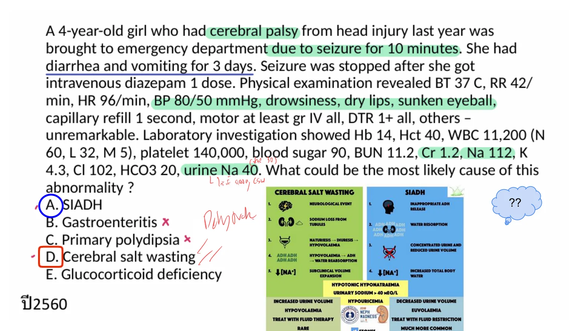
p37
ยังไม่ถูก
A. SIADH
ยังไม่ถูก
B. Gastroenteritis
ยังไม่ถูก
C. Primary polydipsia
ถูกต้อง
Hyponatremia with dehydration and high urine sodium after brain injury favors cerebral salt wasting over SIADH.
For hemophilia B serious head trauma, target factor IX near 100%; 45 kg x 100 IU/kg is about 4500 IU.
A17-0176A17-Q0176solution_ready
Q15. A 24-year-old woman presents to the emergency department with a chief complaint of tongue and lip swelling. She reports that she had a minor fall off a step stool yesterday evening but without any serious injury. She additionally reports that she feels as if she is having some swelling in her throat and feels slightly dyspneic. Her vital signs are the following: T 97.9°F, HR 80, BP 110/80, and RR of 19. On examination, she has moderate swelling of her upper and lower lip as well as her tongue. Despite this, she is able to speak full sentences easily. Her lungs are clear to auscultation bilaterally. She has no skin rashes on examination. She takes no medications. There have been no new environmental exposures. She does report however that these exact symptoms have happened once in the past and that she was recently diagnosed with hereditary angioedema. Which of the following treatments will shorten the duration of her attack?
The source answer slide circles `D. Reassure`. Stable child with minor blunt flank trauma and isolated microscopic hematuria 20-30 RBC/HPF does not need CT/IVP/urethrogram when there is no gross hematuria, shock, significant mechanism, or other concerning finding.
The source answer slide circles `D. Reassure`. Stable child with minor blunt flank trauma and isolated microscopic hematuria 20-30 RBC/HPF does not need CT/IVP/urethrogram when there is no gross hematuria, shock, significant mechanism, or other concerning finding.
The reveal slide shows a distal femoral physeal injury without a metaphyseal or epiphyseal fracture fragment, matching Salter-Harris type I: fracture through the physis.
The source reveal slide circles `D. reassure`. The child has a low-height fall, normal neurologic exam, no symptoms, and only a small occipital bruise. This is low risk by PECARN-style criteria, so no CT/MRI/skull film is needed.
The source reveal slide circles `D. reassure`. The child has a low-height fall, normal neurologic exam, no symptoms, and only a small occipital bruise. This is low risk by PECARN-style criteria, so no CT/MRI/skull film is needed.
The source question/reveal marks Monteggia. Monteggia injury is proximal ulna fracture with radial head dislocation, classically from a forearm/elbow trauma mechanism; the given answer-marked source identifies this as the intended film diagnosis.
The source question/reveal marks Monteggia. Monteggia injury is proximal ulna fracture with radial head dislocation, classically from a forearm/elbow trauma mechanism; the given answer-marked source identifies this as the intended film diagnosis.
The source answer/reveal marks supracondylar fracture. In a 7-year-old with elbow trauma, supracondylar humerus fracture is a common pediatric elbow fracture and the reveal slide links the radiographic examples to this option.
The source answer/reveal marks supracondylar fracture. In a 7-year-old with elbow trauma, supracondylar humerus fracture is a common pediatric elbow fracture and the reveal slide links the radiographic examples to this option.
Pulled elbow/nursemaid elbow is radial head subluxation after traction on a young child's arm. The source reveal gives `supination-flexion` as the reduction maneuver.
141. เด็กชาย 14 ปี ปวดเข่าด้านขวา ปวดมากเวลากระโดดหรือวิ่ง ดีขึ้นเมื่อนั่งพัก ตรวจร่างกาย V/s stable, tender ที่ tibial tuberosity, full ROM knee and hip; film Rt. knee: irregular prominence tibial tuberosity.
crop
ยังไม่ถูก
A. Transient synovitis
ถูกต้อง
This repeats the tibial tuberosity pain pattern: adolescent, pain with jumping/running, localized tibial tuberosity tenderness, and irregular/prominent tibial tuberosity on film. Source reveal circles Osgood-Schlatter disease.
This repeats the tibial tuberosity pain pattern: adolescent, pain with jumping/running, localized tibial tuberosity tenderness, and irregular/prominent tibial tuberosity on film. Source reveal circles Osgood-Schlatter disease.
5. Female 60 yr ให้ประวัติล้ม มีอาการแขนอ่อนแรงมากกว่าขา มาถึงรพ vs stable neuro motor upper grade 3 lower grade 4, decrease sensation arm > leg, what is the most likely diagnosis?
crop
ยังไม่ถูก
A. Anterior cord syndrome
ถูกต้อง
Older patient after fall with arm weakness/sensory loss worse than legs is classic central cord syndrome.
Cardiotocographic and FHR monitoring with OB consultation for tocolytic agent
Rationale
The source slide gives this answer. Pregnant trauma at 33 weeks with contractions but stable hemodynamics and no bleeding/ruptured membranes needs fetal/uterine monitoring and OB involvement; tocolysis may be considered by OB if preterm contractions persist and abruption/other contraindications are excluded.
A 4 year old boy was brought to emergency department due to abrupt onset of left hip pain for 4 hours. He had history of common cold last 2 weeks. His mother noticed that he walked with a limp but refused history of trauma. Physical examination revealed BT 37.6, HR 102, RR 24, BP 98/65, looked well, left hip - abduction and external rotation with full movement on passive and active adduction. What is the most likely diagnosis? [MCQ 61]
p53
ยังไม่ถูก
A. Acute rheumatic fever
ยังไม่ถูก
B. Septic arthritis of the hip
ถูกต้อง
Well-appearing 4-year-old with acute limp/hip pain after recent URI, low-grade temperature, and preserved range of motion is classic transient synovitis. Septic arthritis is less likely because he is not toxic and has full passive/active movement.
Well-appearing 4-year-old with acute limp/hip pain after recent URI, low-grade temperature, and preserved range of motion is classic transient synovitis. Septic arthritis is less likely because he is not toxic and has full passive/active movement.
This is the same Rh-negative pregnancy trauma/abruption concept as A12-0032. With stable fetus/mother and Rh-negative mother, the best listed management is anti-D immunoglobulin.
Deep posterior hymenal notch/cleft or transection extending to the base/rim of the hymen
Rationale
Normal hymenal variants include annular, crescentic, septate, cribriform, fimbriated, bumps/tags, and shallow notches. Findings that are concerning for penetrating trauma include deep posterior notches/clefts, healed transection/complete cleft, or absence of posterior hymenal tissue. The source crop for this row highlights that deep notches/clefts to the hymenal rim and transections extending to the base should be documented as suspicious.
References
- AAFP, Evaluating the Child for Sexual Abuse: diagnostic/concerning findings include acute hymenal injury, absence of posterior hymenal tissue, and healed hymenal transection/complete cleft. https://www.aafp.org/pubs/afp/issues/2001/0301/p883.html
A17-0190A17-Q0190solution_ready
71) Male 19 yr U/D Bipolar on litium, fluoxetine, risperidone ไม่ได้มีปรับยาช่วงนี้ อยู่ๆมาด้วย AOC มักเหม่อลอย Stupor, mutism, มาตรวจพบ Echolalia พูดตามคนตรวจ ทําท่าทางซํ้าๆเดิม บางครั้ง ก็ค้างอยู่ท่าเดิมๆ เกร็งต้านขณะตรวจ ไม่ให้ความร่วมมือ Waxy flexibility PE อื่นๆ ปกติ, V/S ปกติ, no head injury Hx ถาม Dx ? A) Akinetism B) Catatonia C) Delirium D) Locked-in syndrome E) Serotonin syndrome
Stupor, mutism, echolalia, stereotyped/repetitive movements, posturing, negativism/resistance, and waxy flexibility are classic catatonia features. Normal vitals/no head injury and the specific psychomotor signs make delirium, locked-in syndrome, and serotonin syndrome less likely.
References
- NCBI Bookshelf, Catatonia: DSM-5-TR features include stupor, mutism, echolalia, posturing, negativism, and waxy flexibility. https://www.ncbi.nlm.nih.gov/books/NBK430842/
A17-0191A17-Q0191solution_ready
Male 38 yr ถูกรถชนอัดกับกำแพง vital sign stable, mild tender at suprapubic area, unstable pelvis, film pelvis: multiple fx pelvis ถาม appropriate Mx A. UA B. Uretherosccope C. Urethral catheter D. Retrograded uretherogram E. CT pelvis
Pelvic/perineal trauma with blood at the meatus or perineal hematoma needs retrograde urethrogram before urethral catheterization.
A17-0192A17-Q0192solution_ready
ชาย 25 ปี มารพ.ด้วย acute penis pain ขณะมี SI ตรวจร่างกายเจอ swelling, tender, flaccid penis and discoloration เพื่อรักษา minimum function ผู้ป่วยสามารถรอ Urology surgery ได้นานกี่ชั่วโมง A. 2 B. 4 C. 8 D. 16 E. 24
Penile fracture should receive early urologic repair, ideally within 24 hours, to reduce erectile/voiding dysfunction.
A17-0193A17-Q0193solution_ready
ผช 43 ปี presented with abdominal pain from high speed motor vehicle collision with restraints seat belts. V/S stable, PE abdomen tender at supra-pubic area, no guarding, no rebound, perineal ecchymosis with bleeding per meatus, FAST negative. What is the most appropriate next step for investigation A. Cystoscope B. Pyelogram C. retrograde urethrogram D. ultrasound KUB E. plain film x-ray KUB
Pelvic/perineal trauma with blood at the meatus or perineal hematoma needs retrograde urethrogram before urethral catheterization.
A17-0194A17-Q0194solution_ready
ชาย 70 ปี ลื่นล้มเอาด้านซ้ายลง มารพ ด้วย left flank pain ตรวจร่างกายมีแผลถลอก ที่ left flank vital sign normal ปัสสาวะใส CXR film pelvis normal UA RBC 25 ตัว จะทำอะไรต่อ A. retrograde cysto B. retrograde urethrotomy C. CT whole abd and pelvis with contrast D. discharge pain control follow up Uro 1 Wk
Stable blunt flank trauma with only low-grade microscopic hematuria and no gross hematuria or shock usually does not need CT.
A17-0195A17-Q0195solution_ready
A 37-year-old man presented with a sudden cracking sound and acute pain at his penis during sexual intercourse followed by rapid detumescence, penile swelling and discoloration. When he urinated, he could not pass the urine and suffered from aggravated pain. What is the anatomical defect of this patient?\nA. Buck's fascia\nB. Dartos fascia\nC. Tunica vaginalis\nD. Superficial fascia\nE. Tunica albuginea
NSAIDs constrict the afferent arteriole and ACE inhibitors dilate the efferent arteriole, reducing intraglomerular pressure and GFR.
A17-0199A17-Q0199solution_ready
106. ผู้ชาย 50 ปี MCA มีอาการปวดหลัง รู้สึกตัวดี. V/S ดี abdomen: soft, no guard. Back: tender at RtหรือLt. Lateral flank&lateral lumbar spine (ไม่ได้ปวดตรงกลาง) Work up CXR, pelvis: no Fx. FAST negative. UA: RBC 15-20 ถามว่าต้องทำอะไรต่อ
crop
ถูกต้อง
The full-page source shows stable blunt flank trauma with low-grade microscopic hematuria, negative FAST, and no pelvic fracture. This duplicates the A14 blunt-flank-trauma item already resolved as discharge/reassure rather than CT.
ยังไม่ถูก
B. CT pelvis?
ถูกต้อง
The full-page source shows stable blunt flank trauma with low-grade microscopic hematuria, negative FAST, and no pelvic fracture. This duplicates the A14 blunt-flank-trauma item already resolved as discharge/reassure rather than CT.
ถูกต้อง
The full-page source shows stable blunt flank trauma with low-grade microscopic hematuria, negative FAST, and no pelvic fracture. This duplicates the A14 blunt-flank-trauma item already resolved as discharge/reassure rather than CT.
The full-page source shows stable blunt flank trauma with low-grade microscopic hematuria, negative FAST, and no pelvic fracture. This duplicates the A14 blunt-flank-trauma item already resolved as discharge/reassure rather than CT.
A17-0200A17-Q0200solution_ready
เด็ก 8 ปี ล้มข้อศอกกระแทก ข้อศอกบวม ฟิล์มพบข้อศอกเคลื่อน แต่ไม่หัก วางแผนจะ Reduction ควรใช้ยาในข้อใด A Ketofol B fentanyl C midazolam D nitrous oxide
Closed reduction of a painful elbow dislocation usually needs procedural sedation with analgesia. Ketofol is the best single listed option for deep sedation plus analgesic support.
Closed reduction of posterior elbow dislocation is painful and needs procedural sedation with analgesia. Ketofol provides both reliable sedation and analgesic-sparing effect.
Closed reduction of posterior elbow dislocation is painful and needs procedural sedation with analgesia. Ketofol provides both reliable sedation and analgesic-sparing effect.
111. คุณเป็น medical director มีแจ้งเหตุเป็น bls ออกรับ เป็นผู้ป่วยชายอายุ 23 ปี ประสบเหตุโดนยิง ตอนนี้ คนโดนยิง - ตำรวจจับแล้ว ไปพบ grasping, no pulse อาสา CPR อยู่15นาที ตอนนี้คุณไปถึง scene ผู้ป่วยไม่มี pulse แต่ยังไม่มี rigor / หรือ livor mortis แต่พบแผลถูกยิงแค่ที่ หน้าอกด้านซ้ายแค่ข้างเดียว ถามว่าท่านจะทำอะไรต่อ
crop
ยังไม่ถูก
A. Terminated Resuscitation
ยังไม่ถูก
B. CPR จนครบ30นาที
ถูกต้อง
Traumatic arrest after left chest gunshot has a reversible cause of tension pneumothorax. Immediate left needle decompression followed by ongoing CPR is the best listed action.
ยังไม่ถูก
D. Continue CPR ร่วมกับเคลื่อนย้ายไปส่งที่โรงพยาบาลด้วย
Traumatic arrest after left chest gunshot has a reversible cause of tension pneumothorax. Immediate left needle decompression followed by ongoing CPR is the best listed action.
114. Female 20 yr LW 3cm at thenar prominence ถาม regional block.
crop
ยังไม่ถูก
A. Insert needle horizon beneath carpi ulnaris tendon
ยังไม่ถูก
B. Insert needle over lateral aspect radial styloid proximal to snuffbox
ถูกต้อง
A thenar laceration is supplied mainly by the median nerve. The listed wrist approach between palmaris/pollicis longus region and flexor carpi tendon corresponds to a median nerve block.
ยังไม่ถูก
D. Insert needle at 2cm proximal to distal palmar crease deep to medial border flexor carpi ulnaris, medial to ulnar artery
ยังไม่ถูก
E. Insert dorsal surface of proximal first phalanx advance toward volar surface tangential to phalanx and repeat other side
C. Insert needle between policis longus and flexor carpi tendon at proximal wrist crease
Rationale
A thenar laceration is supplied mainly by the median nerve. The listed wrist approach between palmaris/pollicis longus region and flexor carpi tendon corresponds to a median nerve block.
In late pregnancy PaCO2 should be low, so PaCO2 38 with tachypnea after trauma suggests ventilatory failure despite normal blood pressure. Definitive airway control is indicated.
You are advance EMS team, ออกรับชาย 20 ปี motor vehicle collisions, unconscious, breathing normally, no stridor, BP 120/80, O2 sat 95%, lung clear, GCS E1V1M1. You plan helicopter transport to trauma center level 1, which airway management is safe\nA. LMA\nB. Laryngeal airway\nC. O2 mask with bag\nD. BVM\nE. Oropharyngeal airway + O2 mask with bag
With GCS 3 during helicopter transport and no definitive ETT option listed, an oropharyngeal airway with high-flow oxygen/ready bag support is the safest listed airway plan.
Penetrating traumatic arrest with decreased breath sounds requires immediate treatment of possible tension pneumothorax. Bilateral needle decompression is the highest-priority reversible intervention listed.
Penetrating traumatic arrest with decreased breath sounds requires immediate treatment of possible tension pneumothorax. Bilateral needle decompression is the highest-priority reversible intervention listed.
151. Severe trauma ที่หัวและหน้า BP 140/80, HR 118, sat 84%RA, GCS 12 เป็น unstable fracture ที่หน้าและ bleed ปริมาณมากในปาก สักพัก GCS เหลือ 9 ได้ preoxygenation และ ใส่ ETT เป็น direct fail *2 และ LMA ใส่แล้ว ไม่สามารถ ventilate ได้ กลับมา try bag mask c bag แล้วไม่สามารถ ventilate ได้ ให้ Mx อะไร
crop
ยังไม่ถูก
A. On tracheostomy
ยังไม่ถูก
B. Videolaryngoscope
ยังไม่ถูก
C. Blind nasal intubation
ยังไม่ถูก
D. Needle crico
ถูกต้อง
This is cannot-intubate/cannot-oxygenate after failed direct laryngoscopy, failed LMA ventilation, and failed bag-mask ventilation. Surgical cricothyrotomy is indicated.
This is cannot-intubate/cannot-oxygenate after failed direct laryngoscopy, failed LMA ventilation, and failed bag-mask ventilation. Surgical cricothyrotomy is indicated.
Q44. 130. 27 YOM motorcycle accident มี penetrating wound 4th ICS, MCL ข้างขวา EMS ทำ three side occlusive dressing มาแล้ว มาถึง ER เป็น tension pneumothorax ข้างขวา what is the appropriate next step?
MCQ 2025 รวมไม่แยกหัวข้อ.pdf, p.112
ถูกต้อง
A. IV fluid
ถูกต้อง
B. Needle thoracocentesis
ถูกต้อง
C. ICD
ถูกต้อง
D. ETT
ถูกต้อง
E. เปิดแผล remove clot
Source: Old special HTML: C | Page/slot: old-special | Marker: c-prehospital-care-practice-q44
Reference: Source: Old special HTML: C | Page/slot: old-special | Marker: c-prehospital-care-practice-q44
ซ่อนเฉลยเปิดเฉลยSolution readyA17-0209 answer
Answer
Answer not imported.
Rationale
Rationale not imported.
References
- Source note: Source image preserved from MCQ 2025 รวมไม่แยกหัวข้อ.pdf p.112. No answer/lesson in this collection pass. - Original reference: Reference: Source: MCQ 2025 รวมไม่แยกหัวข้อ.pdf | p.112 | full source page rendered; answer intentionally not imported.
A17-0210A17-Q0210solution_ready
Q20. 172. You are advance EMS team, ออกรับชาย 20 ปี motor vehicle collisions, unconscious, breathing normally, no stridor, BP 120/80, O2 sat 95%, Lung clear, GCS E1V1M1 You plan helicopter transport to trauma center level1, which airway mx is safe
MCQ 2566 combined.pdf, p.30
ถูกต้อง
A. LMA
ถูกต้อง
B. Laryngeal airway
ถูกต้อง
C. O2 mask with bag
ถูกต้อง
D. BVM
ถูกต้อง
E. Oropharyngeal airway + O2 mask with bag
Source: Old special HTML: C | Page/slot: old-special | Marker: c-prehospital-transport-and-triage-q20
Reference: Source: Old special HTML: C | Page/slot: old-special | Marker: c-prehospital-transport-and-triage-q20
ซ่อนเฉลยเปิดเฉลยSolution readyA17-0210 answer
Answer
Answer not imported.
Rationale
Rationale not imported.
References
- Source note: Source image preserved from MCQ 2566 combined.pdf p.30. No answer/lesson in this collection pass. - Original reference: Reference: Source: MCQ 2566 combined.pdf | p.30 | full source page rendered; answer intentionally not imported.
A17-0211A17-Q0211solution_ready
Q2. 180. เคสเด็ก 5 ปี BP 72/40 HR 200 SpO2 88 RA มี retraction DTX 330 mg% EKG SVT
MCQ 2566 combined.pdf, p.31
ถูกต้อง
A. paramedic ทำ vagal maneuver
ถูกต้อง
B. paramedic IV adenosine
ถูกต้อง
C. paramedic ทำ cardioversion + sedate offline
ถูกต้อง
D. paramedic ทำ sedate + ETT offline
ถูกต้อง
E. paramedic ทำ sedate + paralysis + ETT online
Source: Old special HTML: C | Page/slot: old-special | Marker: c-trauma-pediatric-ems-q2
Reference: Source: Old special HTML: C | Page/slot: old-special | Marker: c-trauma-pediatric-ems-q2
ซ่อนเฉลยเปิดเฉลยSolution readyA17-0211 answer
Answer
Answer not imported.
Rationale
Rationale not imported.
References
- Source note: Source image preserved from MCQ 2566 combined.pdf p.31. No answer/lesson in this collection pass. - Original reference: Reference: Source: MCQ 2566 combined.pdf | p.31 | full source page rendered; answer intentionally not imported.
A17-0212A17-Q0212solution_ready
Q3. 110. ผช ได้รับบาดเจ็บที่ต้นแขนขวา มีแผลฉีกเลือดออกมาก ถูกนำส่งที่ ER ด้วยทีม EMS active bleeding (ไม่ได้บอกว่า pulsatile bleeding) PR 120 BP 97/50. next step management
MCQ 2566 combined.pdf, p.18
ถูกต้อง
A. blind clamping
ถูกต้อง
B. direct pressure dressing
ถูกต้อง
C. tourniquet
ถูกต้อง
D. นิ้วแหวกแล้วกด
ถูกต้อง
E. Explore wound ที่ ER with suture ligation
Source: Old special HTML: C | Page/slot: old-special | Marker: c-trauma-pediatric-ems-q3
Reference: Source: Old special HTML: C | Page/slot: old-special | Marker: c-trauma-pediatric-ems-q3
ซ่อนเฉลยเปิดเฉลยSolution readyA17-0212 answer
Answer
Answer not imported.
Rationale
Rationale not imported.
References
- Source note: Source image preserved from MCQ 2566 combined.pdf p.18. No answer/lesson in this collection pass. - Original reference: Reference: Source: MCQ 2566 combined.pdf | p.18 | full source page rendered; answer intentionally not imported.
A17-0213A17-Q0213solution_ready
Q7. 127. 34 ปี ขับรถชน มี large laceration ที่ scalp EMS ทำ manual in-line BT 37 BP 80/50 RR 8 shallow no stridor P130 O2sat 93 E1V1M2 pupils react to light both eyes Normal chest and abdominal exam What is the most priority management
MCQ 2025 รวมไม่แยกหัวข้อ.pdf, p.109
ถูกต้อง
A. Assist ventilation
ถูกต้อง
B. Secure IV access
ถูกต้อง
C. IV fluid
ถูกต้อง
D. Stabilize C spine
ถูกต้อง
E. ETT
Source: Old special HTML: C | Page/slot: old-special | Marker: c-trauma-pediatric-ems-q7
Reference: Source: Old special HTML: C | Page/slot: old-special | Marker: c-trauma-pediatric-ems-q7
ซ่อนเฉลยเปิดเฉลยSolution readyA17-0213 answer
Answer
Answer not imported.
Rationale
Rationale not imported.
References
- Source note: Source image preserved from MCQ 2025 รวมไม่แยกหัวข้อ.pdf p.109. No answer/lesson in this collection pass. - Original reference: Reference: Source: MCQ 2025 รวมไม่แยกหัวข้อ.pdf | p.109 | full source page rendered; answer intentionally not imported.
A17-0214A17-Q0214solution_ready
103. M35 MCA EMS นำส่งที่ED V/s hr125 bp70/0 rr26 spo2 89 มีแผลที่ขาขวา. ถาม most appropriate next step mx
crop
ยังไม่ถูก
A. .
ยังไม่ถูก
B. Oropharyngeal intubation
ถูกต้อง
Shock plus extremity wound bleeding requires immediate hemorrhage control; tourniquet is appropriate for severe limb bleeding.
In an intubated trauma patient, sudden ETCO2 drop from 35 to 12 with no unilateral decreased breath sounds suggests a sharp fall in pulmonary blood flow/cardiac output rather than tube displacement or pneumothorax. With hypotension and tachycardia, hypovolemic shock is the best choice.
- NIEMS UCEP public information: emergency critical patients can receive care without advance payment during the first 72 hours. https://www.niems.go.th/1/News/Detail/6231?group=2
A17-0217A17-Q0217solution_ready
Q28. A 47-year-old Thai female with adrenal insufficiency taking prednisolone 10 mg/day presents with left ankle pain after a fall. Vitals are stable, ankle is swollen with full range of motion, and X-rays show no fracture. In addition to pain management, what is the appropriate adjustment for prednisolone?
Endopdf.pdf, source page image p.29
ถูกต้อง
A. Double dose of prednisolone for 1 week
ถูกต้อง
B. Triple dose of prednisolone for 1 week
ถูกต้อง
C. Double dose of prednisolone for 24 to 48 hours
ถูกต้อง
D. Triple dose of prednisolone for 24 to 48 hours
ถูกต้อง
E. Regular dose of prednisolone, no need for dose adjustment
Source: Old special HTML: A04 | Page/slot: old-special | Marker: a04-thyroid-and-adrenal-q28
Reference: Source: Old special HTML: A04 | Page/slot: old-special | Marker: a04-thyroid-and-adrenal-q28
ซ่อนเฉลยเปิดเฉลยSolution readyA17-0217 answer
Answer
Answer not imported.
Rationale
Rationale not imported.
References
- Source note: Extra A04 source item recovered from Endopdf.pdf page 29; answers intentionally omitted. - Original reference: Reference: Source: Endopdf.pdf | p.29
A17-0218A17-Q0218solution_ready
Q83. A 33-year-old man presents with the complaint of a severe headache 2 weeks after he sustained a skull fracture in a motorcycle accident. A CT scan of the brain reveals an intracranial abscess. What is the MOST LIKELY causative organism?
ยังไม่ถูก
A. Group B Streptococcus
ยังไม่ถูก
B. Neisseria meningitides
ถูกต้อง
C. Staphylococcus aureus
ยังไม่ถูก
D. Streptococcus pneumoniae
Source: Old special HTML: A09 | Page/slot: old-special | Marker: a09-mcgraw-board-review-q83
Reference: Source: Old special HTML: A09 | Page/slot: old-special | Marker: a09-mcgraw-board-review-q83
Source: Old special HTML: A09 | Page/slot: old-special | Marker: a09-wound-animal-marine-water-q14
Reference: Source: Old special HTML: A09 | Page/slot: old-special | Marker: a09-wound-animal-marine-water-q14
ซ่อนเฉลยเปิดเฉลยSolution readyA17-0219 answer
Answer
A
Rationale
Rationale not imported.
References
- Source note: Source file: MCQ 2563 by EP15 Rajavithi.pdf - Original reference: Reference: Source: MCQ 2563 by EP15 Rajavithi.pdf | p.31 | source note has only one visible antibiotic answer line; kept review-only until full original choices/key are found.
A17-0220A17-Q0220solution_ready
Q4. ผู้หญิง 56 ปี มี HT ใช้ enalapril มีประวัติ 2 วันก่อนมาโรงพยาบาลปวดข้อเท้าขวาหลัง trauma แล้วรับประทาน ibuprofen 400 mg ทุก 4-6 ชั่วโมง วันนี้พบ AKI with Cr 1.7. What is the mechanism of AKI in this patient?
ยังไม่ถูก
A. Thrombosis Renal artery
ถูกต้อง
B. Interstitial nephritis
ยังไม่ถูก
C. Acute tubular necrosis
ยังไม่ถูก
D. Decrease renal blood flow+decrease GFR
ยังไม่ถูก
E. Vasoconstrict efferent arteriole
Source: Old special HTML: A14 | Page/slot: old-special | Marker: a14-gu-trauma-and-renal-injury-q4
Reference: Source: Old special HTML: A14 | Page/slot: old-special | Marker: a14-gu-trauma-and-renal-injury-q4
Q5. ผู้ชาย 43 ปี ประสบอุบัติเหตุ high-speed motor vehicle collision with restrained seatbelt. V/S stable, abdomen tender at suprapubic area, no guarding, no rebound, มี perineal ecchymosis with bleeding per meatus, FAST negative. What is the most appropriate next investigation?
ยังไม่ถูก
A. Cystoscopy
ยังไม่ถูก
B. Pyelogram
ถูกต้อง
C. Retrograde urethrogram
ยังไม่ถูก
D. Ultrasound KUB
ยังไม่ถูก
E. Plain film X-ray KUB
Source: Old special HTML: A14 | Page/slot: old-special | Marker: a14-gu-trauma-and-renal-injury-q5
Reference: Source: Old special HTML: A14 | Page/slot: old-special | Marker: a14-gu-trauma-and-renal-injury-q5
Q8. A 74-year-old man with a past medical history of spinal cord injury from a prior motor vehicle collision (MVC) with consequent neurogenic bladder with chronic Foley catheter presents with fatigue. His workup in the emergency department is unremarkable except for a urinalysis which reveals 90 white blood cell (WBCs), 20 red blood cells (RBCs), and leukocyte esterase positive. Does this patient have a urinary tract infection (UTI)?
ยังไม่ถูก
A. Yes, he should be treated with antibiotics.
ยังไม่ถูก
B. No, he should not be treated with antibiotics.
ถูกต้อง
C. Unclear, he should be empirically treated if no other cause for his symptoms is found.
ยังไม่ถูก
D. Unclear, treatment should be deferred until a urine culture returns positive.
Source: Old special HTML: A14 | Page/slot: old-special | Marker: a14-mcgraw-ch08-renal-and-genitourinary-q8
Reference: Source: Old special HTML: A14 | Page/slot: old-special | Marker: a14-mcgraw-ch08-renal-and-genitourinary-q8
ซ่อนเฉลยเปิดเฉลยSolution readyA17-0225 answer
Answer
C
Rationale
Rationale not imported.
References
- Source note: Source file: McGraw Chapter 8: Renal and Genitourinary Disorders - Original reference: Reference: Source: McGraw Chapter 8: Renal and Genitourinary Disorders | p.102-105; answer section p.107
Q13. 5 years old girl came to ER due to falling from 1 meter high table, mild pain at buttock and urine is clear, At ER: BT 37, PR 100, RR 20, BP 90/50, SpO2 99%, PE:WNL, FAST negative, no free fluid, UA: RBC. 30-50, WBC 0-1, Epi 0-1 What is most appropriate management [MCQ 65]
Source page image from เด็ก trauma.pdf p.23
ยังไม่ถูก
A. CT urinary system
ยังไม่ถูก
B. CTA urinary system
ยังไม่ถูก
C. Intravenous pyelogram
ยังไม่ถูก
D. Voiding cystourethrogram
ถูกต้อง
E. no further management
Source: Old special HTML: A14 | Page/slot: old-special | Marker: a14-pediatric-renal-and-urogenital-q13
Reference: Source: Old special HTML: A14 | Page/slot: old-special | Marker: a14-pediatric-renal-and-urogenital-q13
Q14. เด็กมี pelvic fracture from car accident, V/S stable, FAST negative, and urinalysis RBC 20. What is the most appropriate management?
Source page image from เด็ก trauma.pdf p.6
ยังไม่ถูก
A. Repeat urinalysis
ถูกต้อง
B. CT abdomen
Source: Old special HTML: A14 | Page/slot: old-special | Marker: a14-pediatric-renal-and-urogenital-q14
Reference: Source: Old special HTML: A14 | Page/slot: old-special | Marker: a14-pediatric-renal-and-urogenital-q14
ซ่อนเฉลยเปิดเฉลยSolution readyA17-0228 answer
Answer
B
Rationale
Rationale not imported.
References
- Source note: Source page from เด็ก trauma.pdf p.6 currently shows only 2 recoverable choice(s). The remaining choices have not been safely recovered yet. Source file: เด็ก trauma.pdf - Original reference: Reference: Source: เด็ก trauma.pdf | p.6
A17-0229A17-Q0229solution_ready
Q21. A 6-year-old boy was brought to ED after motor vehicle collision. The child was clinically stable. Physical examination revealed bruise at the right flank region. Urinalysis showed clear urine, RBC 5-10, WBC 2-3, and no organism. What is the most appropriate management?
Source page image from เด็ก trauma.pdf p.10
ถูกต้อง
A. Serial urinalysis
ยังไม่ถูก
B. CT scan of abdomen
ยังไม่ถูก
C. IVP
ยังไม่ถูก
D. Cystogram
ยังไม่ถูก
E. Urethrogram
Source: Old special HTML: A14 | Page/slot: old-special | Marker: a14-pediatric-renal-and-urogenital-q21
Reference: Source: Old special HTML: A14 | Page/slot: old-special | Marker: a14-pediatric-renal-and-urogenital-q21
Source: Old special HTML: A14 | Page/slot: old-special | Marker: a14-pediatric-renal-and-urogenital-q8
Reference: Source: Old special HTML: A14 | Page/slot: old-special | Marker: a14-pediatric-renal-and-urogenital-q8
ซ่อนเฉลยเปิดเฉลยSolution readyA17-0230 answer
Answer
D
Rationale
Rationale not imported.
References
- Source note: Source file: MCQ PED trauma 66.pdf Also found in: Source: MCQ 2566 combined.pdf | p.20 - Original reference: Reference: Source: MCQ PED trauma 66.pdf | p.2-3 | Source text verified.
A17-0231A17-Q0231solution_ready
Q17. ชาย 70 ปี มี HT ใช้ enalapril, 2 วันก่อนมี right ankle pain หลัง trauma และรับประทาน ibuprofen 400 mg every 4-6 hours. วันนี้พบ BUN และ creatinine สูงขึ้น. What is the pathophysiology of AKI in this patient?
Source: Old special HTML: A14 | Page/slot: old-special | Marker: a14-renal-aki-dialysis-and-electrolyte-q17
Reference: Source: Old special HTML: A14 | Page/slot: old-special | Marker: a14-renal-aki-dialysis-and-electrolyte-q17
ซ่อนเฉลยเปิดเฉลยSolution readyA17-0231 answer
Answer
C
Rationale
Rationale not imported.
References
- Source note: Also found in: Source: KUB 2566.pdf | p.13-14 Source file: Gi kub uro.pdf - Original reference: Reference: Source: Gi kub uro.pdf | p.25-26; also KUB 2566.pdf | p.13-14. Teaching copied from A14 Old Exam Source 2024 Q187-ACEINSAIDRenalMechanism. Textbook: Tintinalli Ch.88 Acute Kidney Injury p.564; Table 88-4 p.566.
A17-0232A17-Q0232solution_ready
Q25. A 37-year-old woman without significant medical history presents to the emergency department for the second time in the past 2 weeks. Her chief com plaint at the initial visit was nausea and vomiting; history-taking at that time revealed that her symp toms began after having a meal with her ex-husband. She was treated with crystalloid infusion and reported symptomatic improvement at that time. She was dis charged with a diagnosis of foodborne illness with out further evaluation at that visit. Since that visit, her feet have become “extremely painful,” so much so that she can barely tolerate the bedsheets touching her feet at night. She also noted that her hair “started to fall out,” and she has experienced sharp chest pain with deep inspiration over the past 48 hours. At the time of her second emergency department visit, she is noted to be persistently tachycardic despite crys talloid administration. You have a suspicion that she may have been poisoned at the encounter with her former spouse. What is the BEST treatment for this patient’s condition?
McGraw Chapter 13: Toxicologic Disorders, p.178
ถูกต้อง
A. Calcium disodium ethylenediamine tetraacetic acid (EDTA)
ถูกต้อง
B. Dimercaprol (British anti-Lewisite [BAL])
ถูกต้อง
C. Prussian blue
ถูกต้อง
D. Succimer
Source: Old special HTML: A16 | Page/slot: old-special | Marker: a16-mcgraw-board-review-q25
Reference: Source: Old special HTML: A16 | Page/slot: old-special | Marker: a16-mcgraw-board-review-q25
Q9. A 44-year-old male construction worker arrives to your emergency department with a burn injury to his leg. He was preparing cement when he accidentally spilled it on his leg (Figure 14.3). Which of the follow ing is the BEST INITIAL management of this type of injury?
McGraw Chapter 14: Environmental Injuries, p.192
ถูกต้อง
A. Brushing off remaining particles from the wound then copious irrigation with saline
ถูกต้อง
B. Copious irrigation with saline
ถูกต้อง
C. Measurement of compartment pressures and fasciotomy
ถูกต้อง
D. Neutralization with a dilute acidic solution
Source: Old special HTML: A16 | Page/slot: old-special | Marker: a16-metal-and-environmental-tox-q9
Reference: Source: Old special HTML: A16 | Page/slot: old-special | Marker: a16-metal-and-environmental-tox-q9
ซ่อนเฉลยเปิดเฉลยSolution readyA17-0233 answer
Answer
Answer not imported.
Rationale
Rationale not imported.
References
- Source note: Additional toxicology-adjacent candidate originally routed to A05. Full source page preserved; no answer/lesson in this pass. - Original reference: Reference: Source: McGraw Chapter 14: Environmental Injuries | p.192 | additional toxicology-adjacent candidate; answer intentionally not imported.
Source: Old special HTML: A16 | Page/slot: old-special | Marker: a16-opioid-sedative-and-substance-q9
Reference: Source: Old special HTML: A16 | Page/slot: old-special | Marker: a16-opioid-sedative-and-substance-q9
ซ่อนเฉลยเปิดเฉลยSolution readyA17-0234 answer
Answer
Answer not imported.
Rationale
Rationale not imported.
References
- Source note: Potential A16/toxicology item originally routed to A14. Full source page preserved; no answer/lesson in this pass. - Original reference: Reference: Source: รวมข้อสอบ-board-2562-CHULA.pdf | p.29 | originally routed as A14; answer intentionally not imported.
A17-0235A17-Q0235solution_ready
Q40. 167. ท่านอยู่เวร medical director, Paramedic รับแจ้งจากมารดาเด็ก 3 ขวบมีอาการสำลักหลังเล่นของเล่น 5 นาที ระหว่างทางที่กำลังส่งทีมออกไปรับ ถามอาการพบว่าเด็กยัง response แต่ไอไม่มีเสียง ถามว่า most appropriate advice by phone [MCQ 64]
เด็ก trauma.pdf, p.31
ถูกต้อง
A. Perform Heimlich maneuver
ถูกต้อง
B. Back blow and chest thrust
ถูกต้อง
C. Observation + wait team
ถูกต้อง
D. ใช้นิ้วกวาดเอา FB ออก
ถูกต้อง
E. Chest compression ช่วยหายใจแบบ mouth to mouth
Source: Old special HTML: C | Page/slot: old-special | Marker: c-medical-oversight-and-command-q40
Reference: Source: Old special HTML: C | Page/slot: old-special | Marker: c-medical-oversight-and-command-q40
ซ่อนเฉลยเปิดเฉลยSolution readyA17-0235 answer
Answer
Answer not imported.
Rationale
Rationale not imported.
References
- Source note: Source image preserved from เด็ก trauma.pdf p.31. No answer/lesson in this collection pass. - Original reference: Reference: Source: เด็ก trauma.pdf | p.31 | full source page rendered; answer intentionally not imported.
A17-0236A17-Q0236solution_ready
Q15. ผู้ป่วย car accident อยู่ในรถ ตรวจร่างกายระบบอื่นปกติ แต่มี fracture neck of femur จะเคลื่อนย้ายอย่างไร
รวมข้อสอบ-board-2562-CHULA.pdf, p.17
ถูกต้อง
A. Scoop
ถูกต้อง
B. Stretcher
ถูกต้อง
C. Spinal board
ถูกต้อง
D. KED
Source: Old special HTML: C | Page/slot: old-special | Marker: c-miscellaneous-q15
Reference: Source: Old special HTML: C | Page/slot: old-special | Marker: c-miscellaneous-q15
ซ่อนเฉลยเปิดเฉลยSolution readyA17-0236 answer
Answer
Answer not imported.
Rationale
Rationale not imported.
References
- Source note: Source file: รวมข้อสอบ-board-2562-CHULA.pdf | Targeted repair from page 17. Source contains complete choices, but no answer mark was available, so the answer remains needs_review. - Original reference: Reference: Source: รวมข้อสอบ-board-2562-CHULA.pdf | p.17
A17-0237A17-Q0237solution_ready
Q36. 28. รถชน ชาติดกับคอนโซลรถด้านหน้า ขา near amputation EMS โทรมาถามเกี่ยวกับการขอตัดขา
MCQ-202024.pdf.pdf, p.2
ถูกต้อง
A. Online
ถูกต้อง
B. on scene
Source: Old special HTML: C | Page/slot: old-special | Marker: c-prehospital-care-practice-q36
Reference: Source: Old special HTML: C | Page/slot: old-special | Marker: c-prehospital-care-practice-q36
ซ่อนเฉลยเปิดเฉลยSolution readyA17-0237 answer
Answer
Answer not imported.
Rationale
Rationale not imported.
References
- Source note: Source image preserved from MCQ-202024.pdf.pdf p.2. No answer/lesson in this collection pass. - Original reference: Reference: Source: MCQ-202024.pdf.pdf | p.2 | full source page rendered; answer intentionally not imported.
A17-0238A17-Q0238solution_ready
Q2. Burn at dorm, you are in treatment red zone มีผู้ป่วยมา3 คน แต่มีรถambulance 1 คัน ระยะน าส่งรพ 10 km เรียงล าดับการน าส่งผู้ป่วย 1. SBP 40 GCS 3 RR6 100% burn 2nd+3rd degree burn 2. SBP 110 GCS 14 RR 20 superficial burn at arm 3. SBP 70 GCS 7 RR 8 burn at neck and face Chioce
MCQ 2566 combined.pdf, p.29
ถูกต้อง
A. 3>1>2
ถูกต้อง
B. 3>2>1
ถูกต้อง
C. 1>3>2
Source: Old special HTML: C | Page/slot: old-special | Marker: c-prehospital-transport-and-triage-q2
Reference: Source: Old special HTML: C | Page/slot: old-special | Marker: c-prehospital-transport-and-triage-q2
Q39. 28. เด็กถูกปืนยิงมีรอยเลือดออกที่หน้าอกและขาขวา At scene สังเกตว่ามีเลือดพุ่งออกมามากไม่หยุด จะทำอย่างไร [MCQ 62]
เด็ก trauma.pdf, p.50
ถูกต้อง
A. Direct pressure
ถูกต้อง
B. tourniquet
ถูกต้อง
C. 3 side dressing
ถูกต้อง
D. NSS bolus
Source: Old special HTML: C | Page/slot: old-special | Marker: c-prehospital-transport-and-triage-q39
Reference: Source: Old special HTML: C | Page/slot: old-special | Marker: c-prehospital-transport-and-triage-q39
ซ่อนเฉลยเปิดเฉลยSolution readyA17-0239 answer
Answer
Answer not imported.
Rationale
Rationale not imported.
References
- Source note: Source image preserved from เด็ก trauma.pdf p.50. No answer/lesson in this collection pass. - Original reference: Reference: Source: เด็ก trauma.pdf | p.50 | full source page rendered; answer intentionally not imported.
A17-0240A17-Q0240solution_ready
Q40. A 4-years-old boy falls through a cold pond. His heart rate is 80 bpm. At scene, he is intubated and brought to you in ED. You found he is asystole and body temperature is 20 C. The team starts CPR. What is the appropriate next step to manage him? [MCQ 61]
เด็ก trauma.pdf, p.59
ถูกต้อง
A. Obtain a CT brain
ถูกต้อง
B. Rewarming to 34 C
ถูกต้อง
C. Maintain hypothermia
ถูกต้อง
D. Call for the ECMO team within 6 hours
ถูกต้อง
E. Declare the patient dead after complete 30 minutes of CPR
Source: Old special HTML: C | Page/slot: old-special | Marker: c-prehospital-transport-and-triage-q40
Reference: Source: Old special HTML: C | Page/slot: old-special | Marker: c-prehospital-transport-and-triage-q40
ซ่อนเฉลยเปิดเฉลยSolution readyA17-0240 answer
Answer
Answer not imported.
Rationale
Rationale not imported.
References
- Source note: Source image preserved from เด็ก trauma.pdf p.59. No answer/lesson in this collection pass. - Original reference: Reference: Source: เด็ก trauma.pdf | p.59 | full source page rendered; answer intentionally not imported.
A17-0241A17-Q0241solution_ready
Q10. 100. เด็ก 6 ปี trauma มี maxillofacial injury paramedic ออกเคส ใส่ ET tube ไม่ได้ ถาม next step management
MCQ 2563 by EP15 Rajavithi.pdf, p.20
ถูกต้อง
A. surgical cricothyroidectomy
ถูกต้อง
B. needle cricothyroidectomy
ถูกต้อง
C. LMA
Source: Old special HTML: C | Page/slot: old-special | Marker: c-trauma-pediatric-ems-q10
Reference: Source: Old special HTML: C | Page/slot: old-special | Marker: c-trauma-pediatric-ems-q10
ซ่อนเฉลยเปิดเฉลยSolution readyA17-0241 answer
Answer
Answer not imported.
Rationale
Rationale not imported.
References
- Source note: Source image preserved from MCQ 2563 by EP15 Rajavithi.pdf p.20. No answer/lesson in this collection pass. - Original reference: Reference: Source: MCQ 2563 by EP15 Rajavithi.pdf | p.20 | full source page rendered; answer intentionally not imported.
A17-0242A17-Q0242solution_ready
Q12. A 6 year old boy is rescued from a burning house. Upon arrival at emergency department, he is still conscious but has difficulty in breathing. His entire face is markedly swelling and stridor is noted. You and your chief resident try to intubate him but fail for 3 attempts and he seems to be drowsier GCS E3V2M4. His oxygen saturation is 76% with BMV ventilation. Which is the appropriate management in this patient? [MCQ 61]
เด็ก trauma.pdf, p.63
ถูกต้อง
A. Laryngeal mask airway
ถูกต้อง
B. Surgical cricothyrotomy
ถูกต้อง
C. Nasopharyngeal airway
ถูกต้อง
D. Needle cricothyrotomy with jet ventilation
ถูกต้อง
E. ET intubation over fiber optic bronchoscope
Source: Old special HTML: C | Page/slot: old-special | Marker: c-trauma-pediatric-ems-q12
Reference: Source: Old special HTML: C | Page/slot: old-special | Marker: c-trauma-pediatric-ems-q12
ซ่อนเฉลยเปิดเฉลยSolution readyA17-0242 answer
Answer
Answer not imported.
Rationale
Rationale not imported.
References
- Source note: Source image preserved from เด็ก trauma.pdf p.63. No answer/lesson in this collection pass. - Original reference: Reference: Source: เด็ก trauma.pdf | p.63 | full source page rendered; answer intentionally not imported.
A17-0243A17-Q0243solution_ready
Q5. 48. ออกเคส prehospital bleeding Lt leg ได้ทำ apply tourniquet เหนือแผล bleed stop ช่วงระหว่าง transfer มี rebleed ถาม management
MCQ 2563 by EP15 Rajavithi.pdf, p.10
ถูกต้อง
A. apply tourniquet distal femur
ถูกต้อง
B. Pressure dressing with bandage
Source: Old special HTML: C | Page/slot: old-special | Marker: c-trauma-pediatric-ems-q5
Reference: Source: Old special HTML: C | Page/slot: old-special | Marker: c-trauma-pediatric-ems-q5
ซ่อนเฉลยเปิดเฉลยSolution readyA17-0243 answer
Answer
Answer not imported.
Rationale
Rationale not imported.
References
- Source note: Source image preserved from MCQ 2563 by EP15 Rajavithi.pdf p.10. No answer/lesson in this collection pass. - Original reference: Reference: Source: MCQ 2563 by EP15 Rajavithi.pdf | p.10 | full source page rendered; answer intentionally not imported.
A17-0244A17-Q0244solution_ready
Q8. 144. Accident, left arm wound, active arterial pulsatile bleeding, cap refill 3 sec, ใส่ tourniquet เหนือแผลแล้ว มาถึง ER ยังคง active bleed What next step management
MCQ 2025 รวมไม่แยกหัวข้อ.pdf, p.118
ถูกต้อง
A. Direct pressure
ถูกต้อง
B. Hemostatic agent
ถูกต้อง
C. ขึ้น second tourniquet
ถูกต้อง
D. Surgical explore
ถูกต้อง
E. Packed gauzed pressure
Source: Old special HTML: C | Page/slot: old-special | Marker: c-trauma-pediatric-ems-q8
Reference: Source: Old special HTML: C | Page/slot: old-special | Marker: c-trauma-pediatric-ems-q8
ซ่อนเฉลยเปิดเฉลยSolution readyA17-0244 answer
Answer
Answer not imported.
Rationale
Rationale not imported.
References
- Source note: Source image preserved from MCQ 2025 รวมไม่แยกหัวข้อ.pdf p.118. No answer/lesson in this collection pass. - Original reference: Reference: Source: MCQ 2025 รวมไม่แยกหัวข้อ.pdf | p.118 | full source page rendered; answer intentionally not imported.
A17-0245A17-Q0245solution_ready
Q33. A 26-year-old man presents after being stabbed in the right flank. Which of the following statements is TRUE?
ถูกต้อง
A. A CT scan with IV contrast provides both anatomic and functional information in the evaluation of potential renal injury.
ยังไม่ถูก
B. If the patient does not have gross or microscopic hematuria, renal injury can be excluded.
ยังไม่ถูก
C. In patients with penetrating trauma to the flank, IV pyelography is sensitive in the detection of renal injury.
ยังไม่ถูก
D. The amount of hematuria correlates with the extent and severity of renal injury.
Source: Old special HTML: A14 | Page/slot: old-special | Marker: a14-mcgraw-ch08-renal-and-genitourinary-q33
Reference: Source: Old special HTML: A14 | Page/slot: old-special | Marker: a14-mcgraw-ch08-renal-and-genitourinary-q33
Q37. A 45-year-old unrestrained driver in a motor vehi cle collision presents with the findings shown in Figure 19.6. Which of the following statements about this condition is MOST ACCURATE?
McGraw Figure 19.6
ถูกต้อง
A. Common physical findings include lower abdominal pain, tenderness, and perineal or scrotal edema.
ยังไม่ถูก
B. Retrograde cystogram is no longer the gold stan dard diagnostic modality.
ยังไม่ถูก
C. This injury is seen in approximately 20% of blunt abdominal trauma cases.
ยังไม่ถูก
D. This injury can be excluded with a negative ultrasound.
Source: Old special HTML: A14 | Page/slot: old-special | Marker: a14-mcgraw-ch08-renal-and-genitourinary-q37
Reference: Source: Old special HTML: A14 | Page/slot: old-special | Marker: a14-mcgraw-ch08-renal-and-genitourinary-q37